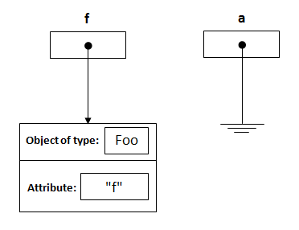

Is Java "pass-by-reference" or "pass-by-value"?
I always thought Java uses pass-by-reference. However, I read a blog post which claims that Java uses pass-by-value. I don't think I understand the distinction the author is making.
What is the explanation?
| 6 | We would more commonly say that a variable "passed-by-reference" can be mutated. The term appears in textbooks because language theorists needed a way to distinguish how you treat primitive data types (int, bool, byte) from complex and structured objects (array, streams, class) -- that is to say, those of possibly unbounded memory allocation. - jlau 4 Aug 2020 at 11:35 |
| 6 | I want to note that you do not have to think about this in most cases. I programmed java for many years until i learned c++. Until this point in time i had no clue what pass-by-reference and pass-by-value are. The intuitive solution always worked for me, which is why java is one of the best languages for beginners. So if you currently are worried, if your function needs a reference or a value, just pass it as it is and you will be fine. - Tobias 20 Oct 2020 at 11:44 |
| 74 | Java pass the reference by value. - The Student 20 Oct 2020 at 19:05 |
| 21 | Putting it very concisely, this confusion arises because in Java all non-primitive data types are handled/accessed by references. However, passing is always be value. So for all non-primitive types reference is passed by its value. All primitive types are also passed by value. - Ozair Kafray 10 Nov 2020 at 06:56 |
| 6 | I found this quite helpful: baeldung.com/java-pass-by-value-or-pass-by-reference - Natasha Kurian 20 Jan 2021 at 09:52 |
| 1 | It's the difference between foo.bar(sth) and foo = sth. In the 1st one, the object is being changed using the variable that is pointing to it, and the variable itself that is pointing to the object has not been changed. In the 2nd one however, the variable itself that used to point to the object has changed and is now pointing to another object. If you have a C++ background: A pointer is a variable that holds a memory address, while a reference has the same memory address as the item it references. In Java indeed, a pointer is passed by value, but Javaistas happen to call it a reference! - aderchox 28 Feb 2021 at 06:28 |
| 3 | What would it mean then for some language to pass a reference not by value? Passing pointers to pointers? Are there languages that do such a thing? Don't languages such as C/C++ also pass references and pointers by value?? - hippietrail 3 Jun 2021 at 04:56 |
| 1 | As Java is an object oriented language and objects are passed by reference, according long time established semantics "modifications of the object apply to the original", it's not clear, how this "pass-by-value"-nonsense could become that famous. - Sam Ginrich 15 Feb 2022 at 14:38 |
| 3 | @SamGinrich Java is always pass-by-value. If you don't understand this basic concept, which is nowhere near an "nonsense" as you call it, I suggest you read the most upvoted answers here until you understand why. - Dalija Prasnikar 15 Feb 2022 at 18:32 |
| for those who like video explanation youtu.be/fL-nXdKWwOg - VedantK 2 Mar 2022 at 06:48 | |
| 1 | This “objects are passed by value” thing is misleading. References to objects are passed. Not copied/moved values of objects. That the references themselves are passed by value is a tiny detail of not much interest. - Pavel Šimerda 17 Dec 2022 at 23:06 |
| 1 | @SamGinrich You are mixing apples and oranges. Programming language paradigm alone is not directly related with what mechanisms language uses for passing parameters. Anyone who knows inner workings of compilers and languages design, know the difference. Terminology is universal, because it conveys meaning to people that know what it means. Just because you refuse to learn the definition, because it does not make sense to you, does not mean that it doesn't hold the value to others who understand it. I suggest that you read the top answer very carefully. - Dalija Prasnikar 10 Jan 2023 at 08:23 |
| 1 | @SamGinrich It is not about learning the definition like a parrot. It is about understanding what it means and why definitions like that are needed. Definition is not about single language they are about all languages. They are important because they describe exact behavior in simple words. If you twist the words, then you lose precise description of what happens. It is like math, where we have some definitions that are base ground for everything. You can say some are arbitrarily picked and we could develop math from slightly different ones, but then everything else in math would change, too. - Dalija Prasnikar 12 Jan 2023 at 07:38 |
| 1 | @SamGinrich Consistency does not equal knowledge. You can consistently claim that the Earth is flat, and you would still be wrong. - Dalija Prasnikar 14 Jan 2023 at 14:02 |
| 4 | Before you post a new answer, consider there are already 93+ answers to this question. Please ensure that your answer contributes information that is not among existing answers. Thanks! - Asadullah 14 Feb 2023 at 20:30 |
| 1 | @SamGinrich My moderation activities are not based on what I like or not, but on correctness. However, if you have any problems with anyone's actions or you feel that some post is not handled appropriately, you can always bring that up on Stack Overflow Meta. As far as this Q/A is concerned I don't have anything new to say that I haven't said already. - Dalija Prasnikar 28 Apr 2023 at 08:46 |
Answer 1 ↓
The terms "pass-by-value" and "pass-by-reference" have special, precisely defined meanings in computer science. These meanings differ from the intuition many people have when first hearing the terms. Much of the confusion in this discussion seems to come from this fact.
The terms "pass-by-value" and "pass-by-reference" are talking about variables. Pass-by-value means that the value of a variable is passed to a function/method. Pass-by-reference means that a reference to that variable is passed to the function. The latter gives the function a way to change the contents of the variable.
By those definitions, Java is always pass-by-value. Unfortunately, when we deal with variables holding objects we are really dealing with object-handles called references which are passed-by-value as well. This terminology and semantics easily confuse many beginners.
It goes like this:
public static void main(String[] args) {
Dog aDog = new Dog("Max");
Dog oldDog = aDog;
// we pass the object to foo
foo(aDog);
// aDog variable is still pointing to the "Max" dog when foo(...) returns
aDog.getName().equals("Max"); // true
aDog.getName().equals("Fifi"); // false
aDog == oldDog; // true
}
public static void foo(Dog d) {
d.getName().equals("Max"); // true
// change d inside of foo() to point to a new Dog instance "Fifi"
d = new Dog("Fifi");
d.getName().equals("Fifi"); // true
}
In the example above aDog.getName() will still return "Max". The value aDog within main is not changed in the function foo with the Dog "Fifi" as the object reference is passed by value. If it were passed by reference, then the aDog.getName() in main would return "Fifi" after the call to foo.
Likewise:
public static void main(String[] args) {
Dog aDog = new Dog("Max");
Dog oldDog = aDog;
foo(aDog);
// when foo(...) returns, the name of the dog has been changed to "Fifi"
aDog.getName().equals("Fifi"); // true
// but it is still the same dog:
aDog == oldDog; // true
}
public static void foo(Dog d) {
d.getName().equals("Max"); // true
// this changes the name of d to be "Fifi"
d.setName("Fifi");
}
In the above example, Fifi is the dog's name after call to foo(aDog) because the object's name was set inside of foo(...). Any operations that foo performs on d are such that, for all practical purposes, they are performed on aDog, but it is not possible to change the value of the variable aDog itself.
For more information on pass by reference and pass by value, consult the following answer: https://stackoverflow.com/a/430958/6005228. This explains more thoroughly the semantics and history behind the two and also explains why Java and many other modern languages appear to do both in certain cases.
| 9 | so what happens to "Fifi" in the 1st example? Does it cease to exist, was it never created, or does it exist in the heap but without a reference variable in the stack? - dbrewster 29 Sep 2020 at 18:03 |
What do you mean by the last sentence but it is not possible to change the value of the variable aDog itself.? - TMOTTM 16 Oct 2020 at 18:33 |
|
| 90 | To me, saying that an object's reference is passed by value is the same as saying that the object is passed by reference. I'm a Java novice, but I presume that (in contrast) primitive data is pass by value. - user36800 27 Oct 2020 at 18:46 |
| 19 | @user36800: You're wrong. Did you work through the example with Fifi and look carefully through the results? Check that indeed foo(aDog); did not change aDog despite foo overwriting the value of d, showing that indeed all inputs to a function are passed by value. - user21820 23 Dec 2020 at 15:03 |
| @user21820: Yes, I did work through the examples and they both made sense to me. I made two statements in my previous comment. If you can specify which one you disagree with, I can try to better understand your last comment. Thanks. - user36800 28 Dec 2020 at 02:29 | |
| 12 | @user36800: Well, both statements are wrong. To pass an object by reference would mean that if the function modifies the variable then it modifies the object itself. That is not what happens in Java; objects cannot be passed by reference, but instead one can only pass references as inputs to a function, and when a function performs d = new Dog("Fifi"); it overwrites the input variable d, which stores a reference but is not 'the object passed by reference'. Contrast with &d in the function signature in C, which would be pass-by-reference. [cont] - user21820 28 Dec 2020 at 05:49 |
| 4 | That was for your first statement. Your second statement is also wrong because everything is passed by value in Java. There is absolutely no difference between object references and primitive data types, except that the operations you are allowed to perform on them differ. - user21820 28 Dec 2020 at 05:51 |
| 1 | Ah, I see. Thanks for clarifying that. I was just thinking in a gross manner, i.e., equating passing by reference as not creating a new object because pointers are used behinds the scenes, and the pointers are automatically dereferenced when the variable is used. It would be so much clearer if pointers were explicitly used. However, the maxim that all Java objects are handled by reference helps. - user36800 28 Dec 2020 at 23:32 |
| 59 | @dbrewster i'm sorry but ... "Fifi" is not among us anymore - ghilesZ 2 Feb 2021 at 19:51 |
| 1 | So what is the difference between an "object reference" and the "value of an Object reference" then . - redd77 30 Apr 2021 at 00:48 |
| 3 | @redd77 when you pass the "value" you are not passing the actual variable, only the value it contains. Meaning you're making a copy of the values and passing in the copy. An object reference (i.e. a pointer) is a variable containing the physical address of the memory which contains the object. The values of an object reference is a copy of that address. Languages which support pass by reference allow you to pass the actual variable and not just a copy so that changing it in the function (like setting it to null) also changes it for the caller. - Sanjeev 8 Jun 2021 at 22:38 |
| @redd77 Only difference is that assigning to a "value of Object reference" does not touch the object. In that way it's like a C/C++ pointer. - user4945014 22 Jun 2021 at 01:14 | |
| @Sanjeev that finally made sense. Pass by reference or by pointer means to pass the reference itself, and not a copy of it. Passing a reference in a pass by value only language, is not pass by reference, it is pass by value. - the_prole 10 Sep 2021 at 22:24 | |
| @the_prole Yes, but just to be clear, the word "Reference" has a different meaning than as used by Java. Therefore pass by reference does not mean pass by pointer (although under-the-hood, pointers could be used to handle PBR, but not necessarily). It just so happens that java uses the same word for pointers. Please see my post for details ==>> stackoverflow.com/questions/40480/… - Sanjeev 21 Sep 2021 at 16:04 | |
| @akki2346 because when you pass an object, you are not making a copy of the whole object and passing that, you are passing the value of the reference. There can be multiple references to the same object in Java. When you pass an object to a function, one of those references to the object is on the stack. - jmarkmurphy 17 Dec 2021 at 19:03 | |
@SamGinrich I don't know why you insist on going back to C++ to understand Java. They are not the same. Ok, do this. Create for me a swap function defined like this swap(String str1, String str2). It should swap the two objects str1 and str2. This will be a simple exercise if Java uses pass by reference semantics for objects. - jmarkmurphy 20 Dec 2021 at 21:34 |
|
| No it's not. Pass by reference/pass by value is all about what is put onto the call stack. In Java, it is the VALUE of the reference, and the receiver understands it as the VALUE of the reference to the object. If we were using pass by reference semantics, things that are represented by a reference would have the address of the reference rather than the value of the reference put on the stack. The receiver would then understand this and dereference the the parameter, and would then operate on the passed object itself, not a copy of it. Did you make that swap function yet? - jmarkmurphy 12 Jan 2022 at 14:05 | |
| So every thing in the world is passed by value. for example in C we always passed by value even if we create a function by input pointer. - Amir 27 Jan 2022 at 21:58 | |
| @Amir think you are wrong on C. tutorialspoint.com/cprogramming/… - Sam Ginrich 21 Feb 2022 at 12:02 | |
| 2 | @SamGinrich, That cited page is incorrect. And once again, the confusion is in contrasting "Passing by reference" with "Passing a reference by value". We are going to see a few such confusions, but C similarly follows the PBV rule. If you need a pointer (reference) sent to function, you send it by value. These terms have meanings in computer science. Colloquially we used define PBV by failing "the swap(a,b) test". - alife 28 Apr 2022 at 02:34 |
| @SamGinrich, I seem to have put you on the defensive. This will send us down the wrong path, and I'll not discuss things with someone who assumes I need to get an overview of terms. I've overlooked the prior engagements of yours regarding this topic, and they seem emotionally charged. I'll not contrast your CS degree with mine, and these principals are far from "because I said so." So I consider this over. - alife 28 Apr 2022 at 20:30 | |
| From this perspective pass-by-reference does never exist in universe, since reference is actually always a value of pointer - azis.mrazish 15 Jun 2022 at 16:44 | |
| So basiclly it's passed by pointer? - JobHunter69 20 Jun 2022 at 20:51 | |
| 1 | @azis.mrazish "From this perspective pass-by-reference does never exist in universe" - by "pass-by-reference" is meant a reference to a variable. That makes it possible for the called function to change the value of the variable that is passed. Languages like C and C++ support that concept, Java doesn't. - fishinear 26 Jul 2022 at 12:02 |
| @alife "If you need a pointer (reference) sent to function, you send it by value" - a crucial difference between C and Java, is that in C there is a way to pass a reference to a variable to a function, such that the function is able to change the content of that variable. That is impossible in Java. Claiming that both C and Java are pass-by-value, and just leave it at that, ignores that crucial difference. - fishinear 26 Jul 2022 at 12:18 | |
| @fishinear, "ignore"? No. Yes, C has a way of doing that, but it doesn't define the "pass-by" vs "passing-a" idioms. All languages have peculiarities---it doesn't necessarily affect CS definitions. By the way, here and there I'm seeing stray assertions floating around that Java was a recent oddity. It follows the same passing regimen as smalltalk did, as smalltalk was its primary influence. - alife 26 Jul 2022 at 23:44 | |
| 1 | @fishinear, I just now read your comment to someone else regarding C. PBV is defined by what happens on assignment to the formal parameter. If you can alter the actual parameter by doing so, then you have PBR (or a hybrid, like C++). Being able to send the address of something to a function in C still requires that assigning to the formal parameter does nothing. In C, you'd have to dereference that pointer. It doesn't change that the pointer itself is the formal parameter and gets assigned while leaving the actual alone. Thus C is PBV only. - alife 27 Jul 2022 at 01:05 |
| @alife "Thus C is PBV only" - yes, I know that is what the definition says, and I am not claiming that it doesn't. But saying that both C and Java are PBV, without any additional explanation, obscures the important fact that is it is possible to pass the address of a variable to a function in C, while that is not possible in Java. That is not just a peculiarity, but an important architectural difference between the languages that should not be neglected. - fishinear 28 Jul 2022 at 09:24 | |
| @alife Another way to look at it, is that it is a syntactic peculiarity of C that you need to put an '&' in front of a variable in order to use pass-by-reference. - fishinear 28 Jul 2022 at 09:33 | |
| 1 | @fishinear, Yes, C allows taking addresses of items and dereferencing them directly. Yet: (pseudo-C) actual=5; someFunction(&actual); still requires this conversation: 1. What is being sent? 2. An address. 3. How is it sent? 4. By value. 5. Why? 6. Because the method altering that parameter (an address, remember it's what's actually sent), does not impact the actual parameter, only the formal parameter. That C allows & and dereferencing-* is interesting, but does not impact PBV. - alife 29 Jul 2022 at 16:04 |
Answer 2 ↑ ↓
I just noticed you referenced my article.
The Java Spec says that everything in Java is pass-by-value. There is no such thing as "pass-by-reference" in Java.
The key to understanding this is that something like
Dog myDog;
is not a Dog; it's actually a pointer to a Dog. The use of the term "reference" in Java is very misleading and is what causes most of the confusion here. What they call "references" act/feel more like what we'd call "pointers" in most other languages.
What that means, is when you have
Dog myDog = new Dog("Rover");
foo(myDog);
you're essentially passing the address of the created Dog object to the foo method.
(I say essentially because Java pointers/references aren't direct addresses, but it's easiest to think of them that way.)
Suppose the Dog object resides at memory address 42. This means we pass 42 to the method.
if the Method were defined as
public void foo(Dog someDog) {
someDog.setName("Max"); // AAA
someDog = new Dog("Fifi"); // BBB
someDog.setName("Rowlf"); // CCC
}
let's look at what's happening.
- the parameter
someDogis set to the value 42 - at line "AAA"
someDogis followed to theDogit points to (theDogobject at address 42)- that
Dog(the one at address 42) is asked to change his name to Max
- at line "BBB"
- a new
Dogis created. Let's say he's at address 74 - we assign the parameter
someDogto 74
- a new
- at line "CCC"
- someDog is followed to the
Dogit points to (theDogobject at address 74) - that
Dog(the one at address 74) is asked to change his name to Rowlf
- someDog is followed to the
- then, we return
Now let's think about what happens outside the method:
Did myDog change?
There's the key.
Keeping in mind that myDog is a pointer, and not an actual Dog, the answer is NO. myDog still has the value 42; it's still pointing to the original Dog (but note that because of line "AAA", its name is now "Max" - still the same Dog; myDog's value has not changed.)
It's perfectly valid to follow an address and change what's at the end of it; that does not change the variable, however.
Java works exactly like C. You can assign a pointer, pass the pointer to a method, follow the pointer in the method and change the data that was pointed to. However, the caller will not see any changes you make to where that pointer points. (In a language with pass-by-reference semantics, the method function can change the pointer and the caller will see that change.)
In C++, Ada, Pascal and other languages that support pass-by-reference, you can actually change the variable that was passed.
If Java had pass-by-reference semantics, the foo method we defined above would have changed where myDog was pointing when it assigned someDog on line BBB.
Think of reference parameters as being aliases for the variable passed in. When that alias is assigned, so is the variable that was passed in.
Update
A discussion in the comments warrants some clarification...
In C, you can write
void swap(int *x, int *y) {
int t = *x;
*x = *y;
*y = t;
}
int x = 1;
int y = 2;
swap(&x, &y);
This is not a special case in C. Both languages use pass-by-value semantics. Here the call site is creating additional data structure to assist the function to access and manipulate data.
The function is being passed pointers to data, and follows those pointers to access and modify that data.
A similar approach in Java, where the caller sets up assisting structure, might be:
void swap(int[] x, int[] y) {
int temp = x[0];
x[0] = y[0];
y[0] = temp;
}
int[] x = {1};
int[] y = {2};
swap(x, y);
(or if you wanted both examples to demonstrate features the other language doesn't have, create a mutable IntWrapper class to use in place of the arrays)
In these cases, both C and Java are simulating pass-by-reference. They're still both passing values (pointers to ints or arrays), and following those pointers inside the called function to manipulate the data.
Pass-by-reference is all about the function declaration/definition, and how it handles its parameters. Reference semantics apply to every call to that function, and the call site only needs to pass variables, no additional data structure.
These simulations require the call site and the function to cooperate. No doubt it's useful, but it's still pass-by-value.
| Minor clarification question on the above example, so when creating new Dog at BBB at address 72, does this imply upon return the created Dog at 72 and it’s value is lost and reverts back to 42? - ebresie 13 Mar 2021 at 14:40 | |
| 3 | @ebresie javarevisited.blogspot.com/2015/09/…. - Ravikumar Rajendran 15 Mar 2021 at 17:08 |
| @ebresie Mostly yes (I'll clarify the "mostly" in a moment). The only pointer to the new dog at 74 (I assume you meant 74 rather than 72) is the parameter to the foo function. When foo returns, all of its parameters are popped off the stack, so nothing is left pointing to 72 and it can be garbage collected. I say "mostly" as there is no "revert" happening; the pointer myDog in the caller was pointing to 42 all along and never changed, no matter what happened in the function, hence, no "revert". - Scott Stanchfield 16 Mar 2021 at 18:42 | |
| "However, you cannot change where that pointer points." -> Shouldnt it be "However, you cannot change where that pointer points in some other method." - NiharGht 8 Jun 2021 at 06:30 | |
| 1 | @NiharGht Good point - I've clarified it (please comment again if it's still not clear) - Scott Stanchfield 10 Jun 2021 at 07:03 |
| 2 | Java does not act exactly like C. If you pass a pointer to a function in C and modify where that pointer points to, the effect of reassigning that pointer is seen at the call sight, not just within the scope of the call. Seeking this behavior out of the languages is the purpose of the const keyword. Please stop saying java is just like C, because it's in many many fundamental ways entirely NOT c (or c++) and all you're doing is confusing people that do know C (or C++) and are trying to get a working overview of java. See: courses.washington.edu/css342/zander/css332/passby.html - Jonathan 24 Jun 2021 at 17:20 |
| 11 | @Jonathan That link is C++, not C. C does not work that way. C is strictly pass by value, just like Java. If you pass a pointer to something, the pointer is the value that you can follow. You cannot change the pointer but can follow it and change the value it points to. If you re-point it, the caller does not see the change. In C++, you can pass a reference to something (seen in that page you reference as int&), which is similar to an alias; if you change it in a function/method it does actually change the object/primitive/pointer passed as an argument. - Scott Stanchfield 26 Jun 2021 at 20:14 |
| @ScottStanchfield Does C have pointers? Java does not! Give this to your favorite c compiler and test the output. C has reference semantics, Java does not. You can't swap values from within a function in java and have it reflected at the call site. pastebin.com/U9QBFrwL - Jonathan 25 Jul 2021 at 14:36 | |
| 2 | @Jonathan That's similar to this in java: pastebin.com/1tZsVVRw. The * is creating a pointer to the argument (which itself could be a pointer), which is similar to creating a "bucket" to hold the value - Java doesn't allow the C syntax and pointers to be created to manipulate existing data, but that doesn't mean Java doesn't have pointers (note that C still doesn't have reference semantics either...). Pascal, for example, uses ^ in a similar way to C's * - just because languages have different syntaxes does not mean they don't have the same concepts (such as pointers). - Scott Stanchfield 26 Jul 2021 at 16:38 |
| @ScottStanchfield C indeed has reference semantics, it's achieved using pointers, exactly like what I put in the Pastebin. So what does the address-of operator do in C? HMM? C has reference semantics. It always HAS had reference semantics. I'm sure you've got linguistics and semantics confused here. I'm not talking about the grammar, it can be a *, a ^, or a type&, the meaning is (mostly) all the same, the caviates being the rules of each langauges typesystem, which AGAIN, is another reason that JAVA IS NOT LIKE C - Jonathan 29 Jul 2021 at 23:49 | |
| 4 | @Jonathan No. C only has pass-by-value (in your example you're passing the value of a pointer - see stackoverflow.com/questions/2229498/passing-by-reference-in-c for a good discussion, esp the answer by Ely). Pass-by-reference has a very specific meaning in compiler parlance. FYI - I'm a compiler guy and was on the ANSI C++ 98 committee... C++ has reference semantics; C does not. The difference is whether the actual argument can be modified. When you pass in &i the actual argument value is the address of i, not a reference to i. - Scott Stanchfield 31 Jul 2021 at 01:37 |
| 1 | @Jonathan (Submitted too early and cannot edit) Inside the method you're not changing that address; you're following that address and changing the data residing there. - Scott Stanchfield 31 Jul 2021 at 01:50 |
| @ScottStanchfield You obviously don't understand pointers and references. The only difference between a pointer and a reference is that a pointer's type can be cast away. A reference IS a pointer with type safety. A pointer is simply a variable that holds the address of something else. Guess what a reference is? A variable that holds the address of something else. A reference isn't an instance of that something else. A reference is basically syntactic sugar for pointers with type safety. If a language has pointers, it has reference semantics. - Jonathan 8 Aug 2021 at 15:05 | |
| 2 | @Jonathan You're confusing 'reference' as a type with 'pass-by-reference'. There's a huge difference between "pass by a value by reference" (reference semantics) and "pass a pointer/reference by value" (value semantics). It's all about how you define the FORMAL parameters of a function/method, not the ACTUAL parameters. If the language gives you syntax to automatically de-reference values in the FORMAL parameters (the function/method signature), it has reference semantics. Creating a pointer to something in the ACTUAL arguments (the call site) is still only passing a value. - Scott Stanchfield 9 Aug 2021 at 08:39 |
| 1 | @Jonathan C and Java are strictly pass-by-value. You can SIMULATE pass-by-reference in them by doing something both inside the function/method AND at the call site (for example, in C, using & at the call site and * inside the function/method, or in Java, wrapping the value at the call site and working inside the wrapper inside the function/method), but that's still pass-by-value. Pass-by-reference is a specific compiler term for logically aliasing a variable passed into a function by ONLY specifying this behavior in the FORMAL parameters, not at the call site. - Scott Stanchfield 9 Aug 2021 at 08:44 |
| Maybe "pass-by-sharing" is even more precise and disambiguated? en.wikipedia.org/wiki/Evaluation_strategy#Call_by_sharing Since it incorporates the reason why people resort to calling it "pass-by-reference" in the first place: the danger that functions are able to mutate objects passed in. They don't want to say "pass-by-value" as it implies copying and thus safety from mutating what's passed in. - Magne 1 Sep 2021 at 11:25 | |
| 1 | @Magne I've never understood why Liskov felt it necessary to coin "call by sharing"; it's just passing the address/reference by value and following it in the function, and causes confusion. Some people didn't want to use the perfectly-correct word "pointer" (even though they used it in "NullPointerException" in Java...) There's nothing about the definition of "pointer" that says it must be implemented directly as a memory address (though it's easiest to think of it that way) - it's just indirect access to data. You don't pass the object in Java; you pass a pointer to an object. - Scott Stanchfield 2 Sep 2021 at 12:27 |
I think it is because people are not "pointer-oriented", but "value/object-oriented". The pointer is invisible to them. As you said "The mistake they make is in the definition of Dog d; itself. When you write that definition, you are defining a pointer to a Dog object, not a Dog object itself.". Maybe because many languages make it invisible (like Java here), but it's common to humans to "mistake the map for the territory" in real life as well; in effect treating the symbol as the referent). "Call by sharing" takes this cognitive artifact into account, so the intention is clearer, to most. - Magne 2 Sep 2021 at 13:55 |
|
| 1 | @Magne Pointers are a key concept in programming; trying to word one's way around them is a sure way to cause more confusion, not less. - Scott Stanchfield 4 Sep 2021 at 14:30 |
| I can see how that might be the case, when coming to Java from a lower level language where you do have to deal with pointers. But coming from a higher level language, or from no previous language, it’s the other way around. Esp. if working in a language where you don’t directly deal with pointers. - Magne 4 Sep 2021 at 21:19 | |
| "In C++, Ada, Pascal and other languages that support pass-by-reference, you can actually change the variable that was passed." Ada doesn't really depend on the actual passing mechanism (for most things) as it has parameter passing modes which have specific semantics. The modes are "in" (read only), "in out" (initial value passed in, modifiable) and "out" (initial value not necessarily passed in, can be updated). For scalars the mechanism for "in out" is copy in/copy out which is much more cache friendly than C's pass by reference. - Dale Stanbrough 27 Sep 2021 at 04:09 | |
| @DaleStanbrough Didn't know about the cache-friendliness there for scalars; cool. Not sure what you mean by "Ada doesn't really depend on the actual passing mechanism (for most things) as it has parameter passing modes which have specific semantics." I was thinking about "in"/"out"/"in out" when I mentioned Ada (with "out" specifying update of a passed variable). Been a while since I've programmed in Ada, though, so I may be fuzzy on some of the ways terminology is used by the language nowadays - Scott Stanchfield 29 Sep 2021 at 17:48 | |
| "It doesn't depend" mainly meant that when designing in Ada you think about the modes (information direction flow) rather than the mechanism - which is such a great way to design subprograms. Ada takes care of the rest. - Dale Stanbrough 2 Oct 2021 at 12:43 | |
| i say it is wrong. in C void func(int *i); is a call by reference function. call by value means you can not change the value of original input. it this case you can implement func some thing like void func(int *i){int j = 5; i = &j;}. so if you say java is call by value you have to say every thing is call by value. cuz always new value copied to stack. - Amir 27 Jan 2022 at 22:06 | |
| @Amir Writing func(int *i) means you're passing a pointer value as the parameter (and would have to call it with func(&x). Note that the caller needs to do something special. That's still pass-by-value. Pass-by reference allows the function to state it can change the parameter value without the caller doing anything extra. C++ allows func(int &i) and you can call it directly with an int x variable like func(x). Pass-by-reference is a special construct in the language, and can be simulated in some value-only languages, but it's not true pass-by-reference. (You can't do either of these in Java) - Scott Stanchfield 29 Jan 2022 at 14:38 | |
| but tutorialspoint.com/cprogramming/… said it is call by reference. it is better clearly define what is call by reference and what is call by value. So it seems C and Assembly don't have call by reference. - Amir 29 Jan 2022 at 16:14 | |
| 1 | @Amir They're incorrect. C only supports value parameters. See stackoverflow.com/questions/2229498/passing-by-reference-in-c for some good explanations, particularly the comment about "Illusion of pass-by-reference". - Scott Stanchfield 29 Jan 2022 at 22:51 |
| @Amir The difference is that "pass by value" is just passing the result of the evaluated expression used as an argument in the function call. "Pass by reference" can be thought of the parameter being an alias for the variable passed in as an argument. - Scott Stanchfield 29 Jan 2022 at 22:55 | |
| @ScottStanchfield The statement that "Java works exactly like C" is incorrect. The semantic difference between PBV and PBR is, that in the latter it is possible for the callee to change the value of the variable in the caller. In C, although the parameter passing is PBV, it IS possible to achieve PBR semantics by passing the address of the variable instead. That is not possible to achieve at all in Java. Therefore Java and C don't work exactly the same, and users need to be aware of that. - fishinear 9 Aug 2022 at 12:33 | |
| @ScottStanchfield " "Pass by reference" can be thought of the parameter being an alias for the variable passed in as an argument" - ...or can be thought of the parameter being a pointer to the variable, which is passed as argument. - fishinear 9 Aug 2022 at 12:34 |
Answer 3 ↑ ↓
Java always passes arguments by value, NOT by reference.
Let me explain this through an example:
public class Main {
public static void main(String[] args) {
Foo f = new Foo("f");
changeReference(f); // It won't change the reference!
modifyReference(f); // It will modify the object that the reference variable "f" refers to!
}
public static void changeReference(Foo a) {
Foo b = new Foo("b");
a = b;
}
public static void modifyReference(Foo c) {
c.setAttribute("c");
}
}
I will explain this in steps:
-
Declaring a reference named
fof typeFooand assign it a new object of typeFoowith an attribute"f".Foo f = new Foo("f");
-
From the method side, a reference of type
Foowith a nameais declared and it's initially assignednull.public static void changeReference(Foo a)
-
As you call the method
changeReference, the referenceawill be assigned the object which is passed as an argument.changeReference(f);
-
Declaring a reference named
bof typeFooand assign it a new object of typeFoowith an attribute"b".Foo b = new Foo("b"); -
a = bmakes a new assignment to the referencea, notf, of the object whose attribute is"b".
-
As you call
modifyReference(Foo c)method, a referencecis created and assigned the object with attribute"f".
-
c.setAttribute("c");will change the attribute of the object that referencecpoints to it, and it's the same object that referencefpoints to it.
I hope you understand now how passing objects as arguments works in Java :)
| 64 | Java always passes arguments by value, but what you are passing by value is a reference to an object, not a copy of the object. Simple eh? - dan carter 7 Dec 2020 at 08:48 |
| "Object not by Reference", really? - Sam Ginrich 4 Dec 2021 at 12:47 | |
| 4 | that was the best answer for references problem in java I have ever see. thanks a lot. - Mohammad_Hosein 17 Dec 2022 at 04:01 |
Answer 4 ↑ ↓
Java is always pass by value, with no exceptions, ever.
So how is it that anyone can be at all confused by this, and believe that Java is pass by reference, or think they have an example of Java acting as pass by reference? The key point is that Java never provides direct access to the values of objects themselves, in any circumstances. The only access to objects is through a reference to that object. Because Java objects are always accessed through a reference, rather than directly, it is common to talk about fields and variables and method arguments as being objects, when pedantically they are only references to objects. The confusion stems from this (strictly speaking, incorrect) change in nomenclature.
So, when calling a method
- For primitive arguments (
int,long, etc.), the pass by value is the actual value of the primitive (for example, 3). - For objects, the pass by value is the value of the reference to the object.
So if you have doSomething(foo) and public void doSomething(Foo foo) { .. } the two Foos have copied references that point to the same objects.
Naturally, passing by value a reference to an object looks very much like (and is indistinguishable in practice from) passing an object by reference.
| JVMS 2.2 makes this pretty clear: There are ... two kinds of values that can be stored in variables, passed as arguments, returned by methods, and operated upon: primitive values and reference values." Object references are values. Everything is passed by value. - Brian Goetz 1 Nov 2020 at 15:52 | |
| geeksforgeeks.org/g-fact-31-java-is-strictly-pass-by-value - georgiana_e 2 Mar 2021 at 07:28 | |
The operative implication: f(x) (passing a variable) will never assign to x itself. There is no such thing as a variable address (alias) passed. A solid language design decision. - Joop Eggen 20 Sep 2021 at 09:37 |
|
So basically we're passing the address and we reference that address in our method for example in c int test(int *a) { int b = *(a); return b;) ? - bwass31 7 Feb 2022 at 17:31 |
|
| So, when I want to pass an object to some method, I'm doomed, because an object is "not a value" :( - Sam Ginrich 16 Feb 2022 at 15:34 |
Answer 5 ↑ ↓
This will give you some insights of how Java really works to the point that in your next discussion about Java passing by reference or passing by value you'll just smile :-)
Step one please erase from your mind that word that starts with 'p' "_ _ _ _ _ _ _", especially if you come from other programming languages. Java and 'p' cannot be written in the same book, forum, or even txt.
Step two remember that when you pass an Object into a method you're passing the Object reference and not the Object itself.
- Student: Master, does this mean that Java is pass-by-reference?
- Master: Grasshopper, No.
Now think of what an Object's reference/variable does/is:
- A variable holds the bits that tell the JVM how to get to the referenced Object in memory (Heap).
- When passing arguments to a method you ARE NOT passing the reference variable, but a copy of the bits in the reference variable. Something like this: 3bad086a. 3bad086a represents a way to get to the passed object.
- So you're just passing 3bad086a that it's the value of the reference.
- You're passing the value of the reference and not the reference itself (and not the object).
- This value is actually COPIED and given to the method.
In the following (please don't try to compile/execute this...):
1. Person person;
2. person = new Person("Tom");
3. changeName(person);
4.
5. //I didn't use Person person below as an argument to be nice
6. static void changeName(Person anotherReferenceToTheSamePersonObject) {
7. anotherReferenceToTheSamePersonObject.setName("Jerry");
8. }
What happens?
- The variable person is created in line #1 and it's null at the beginning.
- A new Person Object is created in line #2, stored in memory, and the variable person is given the reference to the Person object. That is, its address. Let's say 3bad086a.
- The variable person holding the address of the Object is passed to the function in line #3.
- In line #4 you can listen to the sound of silence
- Check the comment on line #5
- A method local variable -anotherReferenceToTheSamePersonObject- is created and then comes the magic in line #6:
- The variable/reference person is copied bit-by-bit and passed to anotherReferenceToTheSamePersonObject inside the function.
- No new instances of Person are created.
- Both "person" and "anotherReferenceToTheSamePersonObject" hold the same value of 3bad086a.
- Don't try this but person==anotherReferenceToTheSamePersonObject would be true.
- Both variables have IDENTICAL COPIES of the reference and they both refer to the same Person Object, the SAME Object on the Heap and NOT A COPY.
A picture is worth a thousand words:
Note that the anotherReferenceToTheSamePersonObject arrows is directed towards the Object and not towards the variable person!
If you didn't get it then just trust me and remember that it's better to say that Java is pass by value. Well, pass by reference value. Oh well, even better is pass-by-copy-of-the-variable-value! ;)
Now feel free to hate me but note that given this there is no difference between passing primitive data types and Objects when talking about method arguments.
You always pass a copy of the bits of the value of the reference!
- If it's a primitive data type these bits will contain the value of the primitive data type itself.
- If it's an Object the bits will contain the value of the address that tells the JVM how to get to the Object.
Java is pass-by-value because inside a method you can modify the referenced Object as much as you want but no matter how hard you try you'll never be able to modify the passed variable that will keep referencing (not p _ _ _ _ _ _ _) the same Object no matter what!
The changeName function above will never be able to modify the actual content (the bit values) of the passed reference. In other word changeName cannot make Person person refer to another Object.
Of course you can cut it short and just say that Java is pass-by-value!
| I tried this: <br /> File file = new File("C:/"); changeFile(file); System.out.println(file.getAbsolutePath()); } public static void changeFile(File f) { f = new File("D:/"); }` - Excessstone 29 Jun 2021 at 09:44 |
Answer 6 ↑ ↓
Java passes references by value.
So you can't change the reference that gets passed in.
| Raises the question, whether Java is an Object Oriented of Reference Oriented language, rather than ´a mechanism for passing arguments´. en.wikipedia.org/wiki/Java_(programming_language)#Principles - Sam Ginrich 8 Mar 2022 at 12:48 |
Answer 7 ↑ ↓
I feel like arguing about "pass-by-reference vs pass-by-value" is not super-helpful.
If you say, "Java is pass-by-whatever (reference/value)", in either case, you're not provide a complete answer. Here's some additional information that will hopefully aid in understanding what's happening in memory.
Crash course on stack/heap before we get to the Java implementation: Values go on and off the stack in a nice orderly fashion, like a stack of plates at a cafeteria. Memory in the heap (also known as dynamic memory) is haphazard and disorganized. The JVM just finds space wherever it can, and frees it up as the variables that use it are no longer needed.
Okay. First off, local primitives go on the stack. So this code:
int x = 3;
float y = 101.1f;
boolean amIAwesome = true;
results in this:

When you declare and instantiate an object. The actual object goes on the heap. What goes on the stack? The address of the object on the heap. C++ programmers would call this a pointer, but some Java developers are against the word "pointer". Whatever. Just know that the address of the object goes on the stack.
Like so:
int problems = 99;
String name = "Jay-Z";
An array is an object, so it goes on the heap as well. And what about the objects in the array? They get their own heap space, and the address of each object goes inside the array.
JButton[] marxBros = new JButton[3];
marxBros[0] = new JButton("Groucho");
marxBros[1] = new JButton("Zeppo");
marxBros[2] = new JButton("Harpo");
So, what gets passed in when you call a method? If you pass in an object, what you're actually passing in is the address of the object. Some might say the "value" of the address, and some say it's just a reference to the object. This is the genesis of the holy war between "reference" and "value" proponents. What you call it isn't as important as that you understand that what's getting passed in is the address to the object.
private static void shout(String name){
System.out.println("There goes " + name + "!");
}
public static void main(String[] args){
String hisName = "John J. Jingleheimerschmitz";
String myName = hisName;
shout(myName);
}
One String gets created and space for it is allocated in the heap, and the address to the string is stored on the stack and given the identifier hisName, since the address of the second String is the same as the first, no new String is created and no new heap space is allocated, but a new identifier is created on the stack. Then we call shout(): a new stack frame is created and a new identifier, name is created and assigned the address of the already-existing String.
So, value, reference? You say "potato".
| 12 | Such an awesome answer that even a fool like myself was able to understand. I would add also amend that "pass by value" literally means that the literal value in the stack is passed. - Dude156 12 Sep 2020 at 21:22 |
| so cute, and the best answer - Mehdi Monzavi 4 Jan 2022 at 14:55 | |
| Precisely, the war starts, when you want to say "an object is passed by reference" - Sam Ginrich 15 Feb 2022 at 23:46 | |
| Upvoted for the first paragraph. The top answers all stick to a strict, narrow-minded definition of pass-by-value/reference without considering what a programmer is actually interested in. - fishinear 12 Aug 2022 at 11:55 |
Answer 8 ↑ ↓
Basically, reassigning Object parameters doesn't affect the argument, e.g.,
private static void foo(Object bar) {
bar = null;
}
public static void main(String[] args) {
String baz = "Hah!";
foo(baz);
System.out.println(baz);
}
will print out "Hah!" instead of null. The reason this works is because bar is a copy of the value of baz, which is just a reference to "Hah!". If it were the actual reference itself, then foo would have redefined baz to null.
Answer 9 ↑ ↓
Just to show the contrast, compare the following C++ and Java snippets:
In C++: Note: Bad code - memory leaks! But it demonstrates the point.
void cppMethod(int val, int &ref, Dog obj, Dog &objRef, Dog *objPtr, Dog *&objPtrRef)
{
val = 7; // Modifies the copy
ref = 7; // Modifies the original variable
obj.SetName("obj"); // Modifies the copy of Dog passed
objRef.SetName("objRef"); // Modifies the original Dog passed
objPtr->SetName("objPtr"); // Modifies the original Dog pointed to
// by the copy of the pointer passed.
objPtr = new Dog("newObjPtr"); // Modifies the copy of the pointer,
// leaving the original object alone.
objPtrRef->SetName("objRefPtr"); // Modifies the original Dog pointed to
// by the original pointer passed.
objPtrRef = new Dog("newObjPtrRef"); // Modifies the original pointer passed
}
int main()
{
int a = 0;
int b = 0;
Dog d0 = Dog("d0");
Dog d1 = Dog("d1");
Dog *d2 = new Dog("d2");
Dog *d3 = new Dog("d3");
cppMethod(a, b, d0, d1, d2, d3);
// a is still set to 0
// b is now set to 7
// d0 still have name "d0"
// d1 now has name "objRef"
// d2 now has name "objPtr"
// d3 now has name "newObjPtrRef"
}
In Java,
public static void javaMethod(int val, Dog objPtr)
{
val = 7; // Modifies the copy
objPtr.SetName("objPtr") // Modifies the original Dog pointed to
// by the copy of the pointer passed.
objPtr = new Dog("newObjPtr"); // Modifies the copy of the pointer,
// leaving the original object alone.
}
public static void main()
{
int a = 0;
Dog d0 = new Dog("d0");
javaMethod(a, d0);
// a is still set to 0
// d0 now has name "objPtr"
}
Java only has the two types of passing: by value for built-in types, and by value of the pointer for object types.
| 1 | This shows that java is not pass by value as it doesn't copy the whole object onto the stack like C++ does, as shown in the example above - ..., Dog obj,... - Solubris 25 Nov 2020 at 23:03 |
| 3 | No, Java passes references by value. That's why when you overwrite objPtr in the java example, the original Dog object doesn't change. But if modify the object being pointed to by objPtr, it does. - Eclipse 26 Nov 2020 at 22:03 |
Answer 10 ↑ ↓
Java passes references to objects by value.
| 6 | Not a useful explanation. - Johnes 14 Jan 2022 at 15:31 |
| What you mean is Java passes by copying the value to the reference. - skystar7 1 Jan 2023 at 18:59 |
Answer 11 ↑ ↓
I can't believe that nobody mentioned Barbara Liskov yet. When she designed CLU in 1974, she ran into this same terminology problem, and she invented the term call by sharing (also known as call by object-sharing and call by object) for this specific case of "call by value where the value is a reference".
| :) another term, feeding the confusion around the Java Island, just because it's politically incorrect to say "An Object is passed by reference, according to what we find on the stack". - Sam Ginrich 6 Dec 2021 at 18:11 |
Answer 12 ↑ ↓
The crux of the matter is that the word reference in the expression "pass by reference" means something completely different from the usual meaning of the word reference in Java.
Usually in Java reference means a a reference to an object. But the technical terms pass by reference/value from programming language theory is talking about a reference to the memory cell holding the variable, which is something completely different.
| Yes, a object reference is technically a handle, not yet the address, and so even a step further from "by value". - Sam Ginrich 6 Dec 2021 at 18:14 |
Answer 13 ↑ ↓
There are already great answers that cover this. I wanted to make a small contribution by sharing a very simple example (which will compile) contrasting the behaviors between Pass-by-reference in c++ and Pass-by-value in Java.
A few points:
- The term "reference" is a overloaded with two separate meanings. In Java it simply means a pointer, but in the context of "Pass-by-reference" it means a handle to the original variable which was passed in.
- Java is Pass-by-value. Java is a descendent of C (among other languages). Before C, several (but not all) earlier languages like FORTRAN and COBOL supported PBR, but C did not. PBR allowed these other languages to make changes to the passed variables inside sub-routines. In order to accomplish the same thing (i.e. change the values of variables inside functions), C programmers passed pointers to variables into functions. Languages inspired by C, such as Java, borrowed this idea and continue to pass pointer to methods as C did, except that Java calls its pointers References. Again, this is a different use of the word "Reference" than in "Pass-By-Reference".
- C++ allows Pass-by-reference by declaring a reference parameter using the "&" character (which happens to be the same character used to indicate "the address of a variable" in both C and C++). For example, if we pass in a pointer by reference, the parameter and the argument are not just pointing to the same object. Rather, they are the same variable. If one gets set to a different address or to null, so does the other.
- In the C++ example below I'm passing a pointer to a null terminated string by reference. And in the Java example below I'm passing a Java reference to a String (again, the same as a pointer to a String) by value. Notice the output in the comments.
C++ pass by reference example:
using namespace std;
#include <iostream>
void change (char *&str){ // the '&' makes this a reference parameter
str = NULL;
}
int main()
{
char *str = "not Null";
change(str);
cout<<"str is " << str; // ==>str is <null>
}
Java pass "a Java reference" by value example
public class ValueDemo{
public void change (String str){
str = null;
}
public static void main(String []args){
ValueDemo vd = new ValueDemo();
String str = "not null";
vd.change(str);
System.out.println("str is " + str); // ==> str is not null!!
// Note that if "str" was
// passed-by-reference, it
// WOULD BE NULL after the
// call to change().
}
}
EDIT
Several people have written comments which seem to indicate that either they are not looking at my examples or they don't get the c++ example. Not sure where the disconnect is, but guessing the c++ example is not clear. I'm posting the same example in pascal because I think pass-by-reference looks cleaner in pascal, but I could be wrong. I might just be confusing people more; I hope not.
In pascal, parameters passed-by-reference are called "var parameters". In the procedure setToNil below, please note the keyword 'var' which precedes the parameter 'ptr'. When a pointer is passed to this procedure, it will be passed by reference. Note the behavior: when this procedure sets ptr to nil (that's pascal speak for NULL), it will set the argument to nil--you can't do that in Java.
program passByRefDemo;
type
iptr = ^integer;
var
ptr: iptr;
procedure setToNil(var ptr : iptr);
begin
ptr := nil;
end;
begin
new(ptr);
ptr^ := 10;
setToNil(ptr);
if (ptr = nil) then
writeln('ptr seems to be nil'); { ptr should be nil, so this line will run. }
end.
EDIT 2
Some excerpts from "THE Java Programming Language" by Ken Arnold, James Gosling (the guy who invented Java), and David Holmes, chapter 2, section 2.6.5
All parameters to methods are passed "by value". In other words, values of parameter variables in a method are copies of the invoker specified as arguments.
He goes on to make the same point regarding objects . . .
You should note that when the parameter is an object reference, it is the object reference-not the object itself-that is passed "by value".
And towards the end of the same section he makes a broader statement about java being only pass by value and never pass by reference.
The Java programming language does not pass objects by reference; it passes object references by value. Because two copies of the same reference refer to the same actual object, changes made through one reference variable are visible through the other. There is exactly one parameter passing mode-pass by value-and that helps keep things simple.
This section of the book has a great explanation of parameter passing in Java and of the distinction between pass-by-reference and pass-by-value and it's by the creator of Java. I would encourage anyone to read it, especially if you're still not convinced.
I think the difference between the two models is very subtle and unless you've done programming where you actually used pass-by-reference, it's easy to miss where two models differ.
I hope this settles the debate, but probably won't.
EDIT 3
I might be a little obsessed with this post. Probably because I feel that the makers of Java inadvertently spread misinformation. If instead of using the word "reference" for pointers they had used something else, say dingleberry, there would've been no problem. You could say, "Java passes dingleberries by value and not by reference", and nobody would be confused.
That's the reason only Java developers have issue with this. They look at the word "reference" and think they know exactly what that means, so they don't even bother to consider the opposing argument.
Anyway, I noticed a comment in an older post, which made a balloon analogy which I really liked. So much so that I decided to glue together some clip-art to make a set of cartoons to illustrate the point.
Passing a reference by value--Changes to the reference are not reflected in the caller's scope, but the changes to the object are. This is because the reference is copied, but the both the original and the copy refer to the same object.
{kind=link}
Pass by reference--There is no copy of the reference. Single reference is shared by both the caller and the function being called. Any changes to the reference or the Object's data are reflected in the caller's scope.
{kind=link}
EDIT 4
I have seen posts on this topic which describe the low level implementation of parameter passing in Java, which I think is great and very helpful because it makes an abstract idea concrete. However, to me the question is more about the behavior described in the language specification than about the technical implementation of the behavior. This is an exerpt from the Java Language Specification, section 8.4.1 :
When the method or constructor is invoked (§15.12), the values of the actual argument expressions initialize newly created parameter variables, each of the declared type, before execution of the body of the method or constructor. The Identifier that appears in the DeclaratorId may be used as a simple name in the body of the method or constructor to refer to the formal parameter.
Which means, java creates a copy of the passed parameters before executing a method. Like most people who studied compilers in college, I used "The Dragon Book" which is THE compilers book. It has a good description of "Call-by-value" and "Call-by-Reference" in Chapter 1. The Call-by-value description matches up with Java Specs exactly.
Back when I studied compilers-in the 90's, I used the first edition of the book from 1986 which pre-dated Java by about 9 or 10 years. However, I just ran across a copy of the 2nd Eddition from 2007 which actually mentions Java! Section 1.6.6 labeled "Parameter Passing Mechanisms" describes parameter passing pretty nicely. Here is an excerpt under the heading "Call-by-value" which mentions Java:
In call-by-value, the actual parameter is evaluated (if it is an expression) or copied (if it is a variable). The value is placed in the location belonging to the corresponding formal parameter of the called procedure. This method is used in C and Java, and is a common option in C++ , as well as in most other languages.
| "The Java programming language does not pass objects by reference; it passes object references by value." I think this statement as a whole is wrong. Assume, you want to pass an object to a method ... - Sam Ginrich 16 Feb 2022 at 00:22 | |
| 2 | @SamGinrich, in this case you are passing a reference to that object. The object exists somewhere in memory. The reference (otherwise known as a pointer) is like a primitive (like a long) which holds the memory address of the object. What's passed into the method is actually a copy of the reference. Since you're passing a COPY of the reference, this is pass by value (i.e. you're passing the reference by value). If you were to set the copy to null inside the method, it would have no affect on the original. If this was pass by reference setting the copy to null would also set the original to nul - Sanjeev 17 Feb 2022 at 15:40 |
| 1 | @SamGinrich Have a look at my code example and the two diagrams I posted. - Sanjeev 17 Feb 2022 at 15:41 |
| Totally agree with your presentation. I doubt that Ken Arnold et al. are qualified to rename long time established concepts, where "passing an object reference" had been equivalent to "passing an object by reference", as you obviously work on shared objects and references for this purpose are invariant, in analogy to pointers. That's how I learned it at university. Now, in the use case "passing an object to some method" focusing on the technical aspect of the reference appears as artificial narrowing, not catching up on: "Does the called method work on the original object or a copy?" - Sam Ginrich 17 Feb 2022 at 16:34 | |
| 2 | @SamGinrich If you look at the definition of pass-by-value, that's exactly what it boils down to - PBV = passing a copy. And if you look at the Java language definition, that's exactly what Java does. I've included excerpts from both "The dragon book" and the Java language specification (Edit 4). Also, Arnold and Gosling are both highly regarded computer scientists and the creators of Java. They are actually NOT renaming established concepts. If you look at the excerpts form their book (Edit 2), they are saying exactly the same as my post and it's consistent with established Computer Science. - Sanjeev 18 Feb 2022 at 16:01 |
| Sure, and I explained, why I'm qualified to reject all of these, according to established Computer Science. And I well understand, that Java wants to have its island, probably driven by testosterone. ;) Terms were well defined and understood before Java, when there was no "look at the definition of some Java-Guru". tutorialspoint.com/cprogramming/… - Sam Ginrich 21 Feb 2022 at 12:06 | |
| 1 | @SamGinrich These definitions existed BEFORE Java. They are not the definitions of "some Java-Guru". The "Dragon Book" existed BEFORE Java. Computer Science existed BEFORE Java. The link you posted completely missed the point of a swap test. In order for it to be valid you would need to swap the actual pointers, not what they point to. It's silly the take the word of some random guy who wrote a tutorial on the internet over people like Sethi, Ullman, Lam, and Aho. Also, Gosling is no just a "Guru". He's the creator of Java. I'm sure he's more qualified than anyone to comment on Java. - Sanjeev 21 Feb 2022 at 17:25 |
| @SamGinrich I don't doubt your qualification. But I have sourced six famous computer scientists with PhDs who are widely published to make my point. And not just any computer scientists. Gosling created Java. Sethi, Ullman, Lam, and Aho are the gods of compilers. They wrote the most widely used text book on compilers. You should look at the list of publications, accomplishments, and awards for these people. In response to that you have to give me something better than a nameless guy with a laptop who writes tutorials for a website. - Sanjeev 21 Feb 2022 at 17:36 | |
| Think a Guru is someone who creates own rules. Now claiming these rules to be world formula, while the rest of the computer science community does not agree, leads to discussions like the one we have. What have you achieved, if for every statement of mine you refer precisely to the same people, which have called out for their arbitrary change of terms. - Sam Ginrich 21 Feb 2022 at 18:17 | |
| @SamGinrich Here is the definition of Guru according to Merriam-Webster : merriam-webster.com/dictionary/guru. The assertion, "the rest of the computer science community does not agree", can you site any sources for this? As for, "the same people", if I really tried, I could get you more sources, but I'd have to go digging through text books. Can you at least supply one decent source? Until then here is IBMs documentation on C and C++ which show how of the two only C++ an accomplish this : ibm.com/docs/en/zos/2.4.0?topic=calls-pass-by-reference-c-only. . . - Sanjeev 21 Feb 2022 at 19:29 | |
| @SamGinrich . . . also here is a really good article by Scott Stanchfield of on why Java is pass-by-value only. It does a better job than me. javadude.com/articles/passbyvalue.htm - Sanjeev 21 Feb 2022 at 19:31 | |
| 1 | Oops, think I totally agreed with your answer above, though not with citing definitions, which are neither from you nor from me. - Sam Ginrich 22 Feb 2022 at 17:55 |
| @SamGinrich, you're right about citing definitions. - Sanjeev 22 Feb 2022 at 23:21 | |
| :) As stated above I reject them. The original semantics of "passing-by-reference" is that an instance is shared among caller and called method. Whoever came later to define for himself something else, cannot allocate computer science as a whole. - Sam Ginrich 24 Feb 2022 at 17:59 | |
| 1 | @SamGinrich again, nobody has changed the definition. I worked hard to compile all the information in this post, which shows exactly that. If you think someone is trying to changed the definition, please share some evidence of that. - Sanjeev 24 Feb 2022 at 18:07 |
| As stated above, the main post above is an island, even if it's a huge one. I'm still wondering, how someone with IQ>=85% can put out a sentence of shape "Java is <a parameter passing mode>". - Sam Ginrich 24 Feb 2022 at 18:17 | |
| Indirect evidence, that other definitions exist is here stackoverflow.com/questions/2229498/passing-by-reference-in-c - Sam Ginrich 24 Feb 2022 at 19:32 | |
| 1 | A) that is not evidence of "Established Computer Science" disagreeing with Gosling, it's someone asking a question on stack overflow. B) Thats an example of a pointer being passed by value, not pass-by-reference. C) my post explains this. Have you read it carefully? - Sanjeev 25 Feb 2022 at 17:36 |
| Established Computer science is here learn.microsoft.com/en-us/dotnet/visual-basic/programming-guide/… - Sam Ginrich 25 Feb 2022 at 19:08 | |
| 1 | @SamGinrich VB ALLOWS pass-by-reference. Java and C do not!! Am I just wasting my time? - Sanjeev 25 Feb 2022 at 19:11 |
| If you say so and loud enough, Established Computer Science will comply. The expectation of a unique terminology on your base - yes, a waste of time! - Sam Ginrich 25 Feb 2022 at 19:13 | |
| @SamGinrich please read the Microsfoft documentation which you yourself posted. Microsoft does not disagree with Gosling. You haven't posted anything that shows this. And please stop speaking for "Established Computer Science". Majority of the people around the world who design languages and write compilers studied from The Dragon Book. THAT is established computer science. Not me, not you. - Sanjeev 25 Feb 2022 at 19:22 | |
| @SamGinrich here is my reply to the post you posted stackoverflow.com/a/71270573/1028560 - Sanjeev 25 Feb 2022 at 19:32 | |
| 1 | @SamGinrich saw your post here stackoverflow.com/a/70586240/1028560. I think I know the source of the confusion. I think you have a misunderstanding of what pass-by-value is. Please have a look at this link blog.penjee.com/passing-by-value-vs-by-reference-java-graphical. This does a great job of explaining the difference and shows why Java is Pass-By-Value. - Sanjeev 25 Feb 2022 at 19:38 |
| I won't. You do not belong to the generation, that grew up with these things and you don't listen anyway, violating the golden rule. stackoverflow.com/a/2229516/9437799 - Sam Ginrich 25 Feb 2022 at 19:40 | |
| HI @Sanjeev I think you might be able to help me with this question based on your good answer here: stackoverflow.com/questions/75185425/…? Thanks - Stan 20 Jan 2023 at 21:53 |
Answer 14 ↑ ↓
In java everything is reference, so when you have something like: Point pnt1 = new Point(0,0); Java does following:
- Creates new Point object
- Creates new Point reference and initialize that reference to point (refer to) on previously created Point object.
- From here, through Point object life, you will access to that object through pnt1 reference. So we can say that in Java you manipulate object through its reference.
Java doesn't pass method arguments by reference; it passes them by value. I will use example from this site:
public static void tricky(Point arg1, Point arg2) {
arg1.x = 100;
arg1.y = 100;
Point temp = arg1;
arg1 = arg2;
arg2 = temp;
}
public static void main(String [] args) {
Point pnt1 = new Point(0,0);
Point pnt2 = new Point(0,0);
System.out.println("X1: " + pnt1.x + " Y1: " +pnt1.y);
System.out.println("X2: " + pnt2.x + " Y2: " +pnt2.y);
System.out.println(" ");
tricky(pnt1,pnt2);
System.out.println("X1: " + pnt1.x + " Y1:" + pnt1.y);
System.out.println("X2: " + pnt2.x + " Y2: " +pnt2.y);
}
Flow of the program:
Point pnt1 = new Point(0,0);
Point pnt2 = new Point(0,0);
Creating two different Point object with two different reference associated.
System.out.println("X1: " + pnt1.x + " Y1: " +pnt1.y);
System.out.println("X2: " + pnt2.x + " Y2: " +pnt2.y);
System.out.println(" ");
As expected output will be:
X1: 0 Y1: 0
X2: 0 Y2: 0
On this line 'pass-by-value' goes into the play...
tricky(pnt1,pnt2); public void tricky(Point arg1, Point arg2);
References pnt1 and pnt2 are passed by value to the tricky method, which means that now yours references pnt1 and pnt2 have their copies named arg1 and arg2.So pnt1 and arg1 points to the same object. (Same for the pnt2 and arg2)
In the tricky method:
arg1.x = 100;
arg1.y = 100;
Next in the tricky method
Point temp = arg1;
arg1 = arg2;
arg2 = temp;
Here, you first create new temp Point reference which will point on same place like arg1 reference. Then you move reference arg1 to point to the same place like arg2 reference. Finally arg2 will point to the same place like temp.
From here scope of tricky method is gone and you don't have access any more to the references: arg1, arg2, temp. But important note is that everything you do with these references when they are 'in life' will permanently affect object on which they are point to.
So after executing method tricky, when you return to main, you have this situation:
So now, completely execution of program will be:
X1: 0 Y1: 0
X2: 0 Y2: 0
X1: 100 Y1: 100
X2: 0 Y2: 0
| 1 | Half of the rent: "everything" is "objects" in your post. - Sam Ginrich 15 Feb 2022 at 23:53 |
| 1 | You wrote: "In java everything is reference" This is not correct. Only objects are references. Primitives are not. This is what @SamGinrich meant by his comment. - platypusguy 30 May 2022 at 08:43 |
Answer 15 ↑ ↓
Java is always pass by value, not pass by reference
First of all, we need to understand what pass by value and pass by reference are.
Pass by value means that you are making a copy in memory of the actual parameter's value that is passed in. This is a copy of the contents of the actual parameter.
Pass by reference (also called pass by address) means that a copy of the address of the actual parameter is stored.
Sometimes Java can give the illusion of pass by reference. Let's see how it works by using the example below:
public class PassByValue {
public static void main(String[] args) {
Test t = new Test();
t.name = "initialvalue";
new PassByValue().changeValue(t);
System.out.println(t.name);
}
public void changeValue(Test f) {
f.name = "changevalue";
}
}
class Test {
String name;
}
The output of this program is:
changevalue
Let's understand step by step:
Test t = new Test();
As we all know it will create an object in the heap and return the reference value back to t. For example, suppose the value of t is 0x100234 (we don't know the actual JVM internal value, this is just an example) .

new PassByValue().changeValue(t);
When passing reference t to the function it will not directly pass the actual reference value of object test, but it will create a copy of t and then pass it to the function. Since it is passing by value, it passes a copy of the variable rather than the actual reference of it. Since we said the value of t was 0x100234, both t and f will have the same value and hence they will point to the same object.
If you change anything in the function using reference f it will modify the existing contents of the object. That is why we got the output changevalue, which is updated in the function.
To understand this more clearly, consider the following example:
public class PassByValue {
public static void main(String[] args) {
Test t = new Test();
t.name = "initialvalue";
new PassByValue().changeRefence(t);
System.out.println(t.name);
}
public void changeRefence(Test f) {
f = null;
}
}
class Test {
String name;
}
Will this throw a NullPointerException? No, because it only passes a copy of the reference. In the case of passing by reference, it could have thrown a NullPointerException, as seen below:
Hopefully this will help.
Answer 16 ↑ ↓
Java is a pass by value(stack memory)
How it works
-
Let's first understand that where java stores primitive data type and object data type.
-
Primitive data types itself and object references are stored in the stack. Objects themselves are stored in the heap.
-
It means, Stack memory stores primitive data types and also the addresses of objects.
-
And you always pass a copy of the bits of the value of the reference.
-
If it's a primitive data type then these copied bits contain the value of the primitive data type itself, That's why when we change the value of argument inside the method then it does not reflect the changes outside.
-
If it's an object data type like Foo foo=new Foo() then in this case copy of the address of the object passes like file shortcut , suppose we have a text file abc.txt at C:\desktop and suppose we make shortcut of the same file and put this inside C:\desktop\abc-shortcut so when you access the file from C:\desktop\abc.txt and write 'Stack Overflow' and close the file and again you open the file from shortcut then you write ' is the largest online community for programmers to learn' then total file change will be 'Stack Overflow is the largest online community for programmers to learn' which means it doesn't matter from where you open the file , each time we were accessing the same file , here we can assume Foo as a file and suppose foo stored at 123hd7h(original address like C:\desktop\abc.txt ) address and 234jdid(copied address like C:\desktop\abc-shortcut which actually contains the original address of the file inside) .. So for better understanding make shortcut file and feel.
| What about "Java is a programming language"? What about "Designers of Java built their own terminology, that does not exist outside"? - Sam Ginrich 25 Feb 2022 at 13:26 |
Answer 17 ↑ ↓
A reference is always a value when represented, no matter what language you use.
Getting an outside of the box view, let's look at Assembly or some low level memory management. At the CPU level a reference to anything immediately becomes a value if it gets written to memory or to one of the CPU registers. (That is why pointer is a good definition. It is a value, which has a purpose at the same time).
Data in memory has a Location and at that location there is a value (byte,word, whatever). In Assembly we have a convenient solution to give a Name to certain Location (aka variable), but when compiling the code, the assembler simply replaces Name with the designated location just like your browser replaces domain names with IP addresses.
Down to the core it is technically impossible to pass a reference to anything in any language without representing it (when it immediately becomes a value).
Lets say we have a variable Foo, its Location is at the 47th byte in memory and its Value is 5. We have another variable Ref2Foo which is at 223rd byte in memory, and its value will be 47. This Ref2Foo might be a technical variable, not explicitly created by the program. If you just look at 5 and 47 without any other information, you will see just two Values. If you use them as references then to reach to 5 we have to travel:
(Name)[Location] -> [Value at the Location]
---------------------
(Ref2Foo)[223] -> 47
(Foo)[47] -> 5
This is how jump-tables work.
If we want to call a method/function/procedure with Foo's value, there are a few possible way to pass the variable to the method, depending on the language and its several method invocation modes:
- 5 gets copied to one of the CPU registers (ie. EAX).
- 5 gets PUSHd to the stack.
- 47 gets copied to one of the CPU registers
- 47 PUSHd to the stack.
- 223 gets copied to one of the CPU registers.
- 223 gets PUSHd to the stack.
In every cases above a value - a copy of an existing value - has been created, it is now upto the receiving method to handle it. When you write "Foo" inside the method, it is either read out from EAX, or automatically dereferenced, or double dereferenced, the process depends on how the language works and/or what the type of Foo dictates. This is hidden from the developer until she circumvents the dereferencing process. So a reference is a value when represented, because a reference is a value that has to be processed (at language level).
Now we have passed Foo to the method:
- in case 1. and 2. if you change Foo (
Foo = 9) it only affects local scope as you have a copy of the Value. From inside the method we cannot even determine where in memory the original Foo was located. - in case 3. and 4. if you use default language constructs and change Foo (
Foo = 11), it could change Foo globally (depends on the language, ie. Java or like Pascal'sprocedure findMin(x, y, z: integer;var m: integer);). However if the language allows you to circumvent the dereference process, you can change47, say to49. At that point Foo seems to have been changed if you read it, because you have changed the local pointer to it. And if you were to modify this Foo inside the method (Foo = 12) you will probably FUBAR the execution of the program (aka. segfault) because you will write to a different memory than expected, you can even modify an area that is destined to hold executable program and writing to it will modify running code (Foo is now not at47). BUT Foo's value of47did not change globally, only the one inside the method, because47was also a copy to the method. - in case 5. and 6. if you modify
223inside the method it creates the same mayhem as in 3. or 4. (a pointer, pointing to a now bad value, that is again used as a pointer) but this is still a local problem, as 223 was copied. However if you are able to dereferenceRef2Foo(that is223), reach to and modify the pointed value47, say, to49, it will affect Foo globally, because in this case the methods got a copy of223but the referenced47exists only once, and changing that to49will lead everyRef2Foodouble-dereferencing to a wrong value.
Nitpicking on insignificant details, even languages that do pass-by-reference will pass values to functions, but those functions know that they have to use it for dereferencing purposes. This pass-the-reference-as-value is just hidden from the programmer because it is practically useless and the terminology is only pass-by-reference.
Strict pass-by-value is also useless, it would mean that a 100 Mbyte array should have to be copied every time we call a method with the array as argument, therefore Java cannot be stricly pass-by-value. Every language would pass a reference to this huge array (as a value) and either employs copy-on-write mechanism if that array can be changed locally inside the method or allows the method (as Java does) to modify the array globally (from the caller's view) and a few languages allows to modify the Value of the reference itself.
So in short and in Java's own terminology, Java is pass-by-value where value can be: either a real value or a value that is a representation of a reference.
Answer 18 ↑ ↓
In Java, method arguments are all passed by value :
Java arguments are all passed by value (the value or reference is copied when used by the method) :
In the case of primitive types, Java behaviour is simple: The value is copied in another instance of the primitive type.
In case of Objects, this is the same: Object variables are references (mem buckets holding only Object’s address instead of a primitive value) that was created using the "new" keyword, and are copied like primitive types.
The behaviour can appear different from primitive types: Because the copied object-variable contains the same address (to the same Object). Object's content/members might still be modified within a method and later access outside, giving the illusion that the (containing) Object itself was passed by reference.
"String" Objects appear to be a good counter-example to the urban legend saying that "Objects are passed by reference":
In effect, using a method, you will never be able, to update the value of a String passed as argument:
A String Object, holds characters by an array declared final that can't be modified. Only the address of the Object might be replaced by another using "new". Using "new" to update the variable, will not let the Object be accessed from outside, since the variable was initially passed by value and copied.
Answer 19 ↑ ↓
As far as I know, Java only knows call by value. This means for primitive datatypes you will work with an copy and for objects you will work with an copy of the reference to the objects. However I think there are some pitfalls; for example, this will not work:
public static void swap(StringBuffer s1, StringBuffer s2) {
StringBuffer temp = s1;
s1 = s2;
s2 = temp;
}
public static void main(String[] args) {
StringBuffer s1 = new StringBuffer("Hello");
StringBuffer s2 = new StringBuffer("World");
swap(s1, s2);
System.out.println(s1);
System.out.println(s2);
}
This will populate Hello World and not World Hello because in the swap function you use copys which have no impact on the references in the main. But if your objects are not immutable you can change it for example:
public static void appendWorld(StringBuffer s1) {
s1.append(" World");
}
public static void main(String[] args) {
StringBuffer s = new StringBuffer("Hello");
appendWorld(s);
System.out.println(s);
}
This will populate Hello World on the command line. If you change StringBuffer into String it will produce just Hello because String is immutable. For example:
public static void appendWorld(String s){
s = s+" World";
}
public static void main(String[] args) {
String s = new String("Hello");
appendWorld(s);
System.out.println(s);
}
However you could make a wrapper for String like this which would make it able to use it with Strings:
class StringWrapper {
public String value;
public StringWrapper(String value) {
this.value = value;
}
}
public static void appendWorld(StringWrapper s){
s.value = s.value +" World";
}
public static void main(String[] args) {
StringWrapper s = new StringWrapper("Hello");
appendWorld(s);
System.out.println(s.value);
}
edit: i believe this is also the reason to use StringBuffer when it comes to "adding" two Strings because you can modifie the original object which u can't with immutable objects like String is.
Answer 20 ↑ ↓
No, it's not pass by reference.
Java is pass by value according to the Java Language Specification:
When the method or constructor is invoked (§15.12), the values of the actual argument expressions initialize newly created parameter variables, each of the declared type, before execution of the body of the method or constructor. The Identifier that appears in the DeclaratorId may be used as a simple name in the body of the method or constructor to refer to the formal parameter.
| Java defined itself like this. In history of computer science, the concepts and modi of passing data to functions existed long before Kernighan & Ritchie invented the confusion of pointers and values. For Java one can state, that the own dogmatism of being OBJECT ORIENTED is broke, when in context of calls suddenly a reference is a value, rather than the object instance. - Sam Ginrich 3 Apr 2022 at 09:06 |
Answer 21 ↑ ↓
I thought I'd contribute this answer to add more details from the Specifications.
First, What's the difference between passing by reference vs. passing by value?
Passing by reference means the called functions' parameter will be the same as the callers' passed argument (not the value, but the identity
- the variable itself).
Pass by value means the called functions' parameter will be a copy of the callers' passed argument.
Or from wikipedia, on the subject of pass-by-reference
In call-by-reference evaluation (also referred to as pass-by-reference), a function receives an implicit reference to a variable used as argument, rather than a copy of its value. This typically means that the function can modify (i.e. assign to) the variable used as argument—something that will be seen by its caller.
And on the subject of pass-by-value
In call-by-value, the argument expression is evaluated, and the resulting value is bound to the corresponding variable in the function [...]. If the function or procedure is able to assign values to its parameters, only its local copy is assigned [...].
Second, we need to know what Java uses in its method invocations. The Java Language Specification states
When the method or constructor is invoked (§15.12), the values of the actual argument expressions initialize newly created parameter variables, each of the declared type, before execution of the body of the method or constructor.
So it assigns (or binds) the value of the argument to the corresponding parameter variable.
What is the value of the argument?
Let's consider reference types, the Java Virtual Machine Specification states
There are three kinds of reference types: class types, array types, and interface types. Their values are references to dynamically created class instances, arrays, or class instances or arrays that implement interfaces, respectively.
The Java Language Specification also states
The reference values (often just references) are pointers to these objects, and a special null reference, which refers to no object.
The value of an argument (of some reference type) is a pointer to an object. Note that a variable, an invocation of a method with a reference type return type, and an instance creation expression (new ...) all resolve to a reference type value.
So
public void method (String param) {}
...
String variable = new String("ref");
method(variable);
method(variable.toString());
method(new String("ref"));
all bind the value of a reference to a String instance to the method's newly created parameter, param. This is exactly what the definition of pass-by-value describes. As such, Java is pass-by-value.
The fact that you can follow the reference to invoke a method or access a field of the referenced object is completely irrelevant to the conversation. The definition of pass-by-reference was
This typically means that the function can modify (i.e. assign to) the variable used as argument—something that will be seen by its caller.
In Java, modifying the variable means reassigning it. In Java, if you reassigned the variable within the method, it would go unnoticed to the caller. Modifying the object referenced by the variable is a different concept entirely.
Primitive values are also defined in the Java Virtual Machine Specification, here. The value of the type is the corresponding integral or floating point value, encoded appropriately (8, 16, 32, 64, etc. bits).
Answer 22 ↑ ↓
Let me try to explain my understanding with the help of four examples. Java is pass-by-value, and not pass-by-reference
/**
Pass By Value
In Java, all parameters are passed by value, i.e. assigning a method argument is not visible to the caller.
*/
Example 1:
public class PassByValueString {
public static void main(String[] args) {
new PassByValueString().caller();
}
public void caller() {
String value = "Nikhil";
boolean valueflag = false;
String output = method(value, valueflag);
/*
* 'output' is insignificant in this example. we are more interested in
* 'value' and 'valueflag'
*/
System.out.println("output : " + output);
System.out.println("value : " + value);
System.out.println("valueflag : " + valueflag);
}
public String method(String value, boolean valueflag) {
value = "Anand";
valueflag = true;
return "output";
}
}
Result
output : output
value : Nikhil
valueflag : false
Example 2:
/** * * Pass By Value * */
public class PassByValueNewString {
public static void main(String[] args) {
new PassByValueNewString().caller();
}
public void caller() {
String value = new String("Nikhil");
boolean valueflag = false;
String output = method(value, valueflag);
/*
* 'output' is insignificant in this example. we are more interested in
* 'value' and 'valueflag'
*/
System.out.println("output : " + output);
System.out.println("value : " + value);
System.out.println("valueflag : " + valueflag);
}
public String method(String value, boolean valueflag) {
value = "Anand";
valueflag = true;
return "output";
}
}
Result
output : output
value : Nikhil
valueflag : false
Example 3:
/** This 'Pass By Value has a feeling of 'Pass By Reference'
Some people say primitive types and 'String' are 'pass by value' and objects are 'pass by reference'.
But from this example, we can understand that it is infact pass by value only, keeping in mind that here we are passing the reference as the value. ie: reference is passed by value. That's why are able to change and still it holds true after the local scope. But we cannot change the actual reference outside the original scope. what that means is demonstrated by next example of PassByValueObjectCase2.
*/
public class PassByValueObjectCase1 {
private class Student {
int id;
String name;
public Student() {
}
public Student(int id, String name) {
super();
this.id = id;
this.name = name;
}
public int getId() {
return id;
}
public void setId(int id) {
this.id = id;
}
public String getName() {
return name;
}
public void setName(String name) {
this.name = name;
}
@Override
public String toString() {
return "Student [id=" + id + ", name=" + name + "]";
}
}
public static void main(String[] args) {
new PassByValueObjectCase1().caller();
}
public void caller() {
Student student = new Student(10, "Nikhil");
String output = method(student);
/*
* 'output' is insignificant in this example. we are more interested in
* 'student'
*/
System.out.println("output : " + output);
System.out.println("student : " + student);
}
public String method(Student student) {
student.setName("Anand");
return "output";
}
}
Result
output : output
student : Student [id=10, name=Anand]
Example 4:
/**
In addition to what was mentioned in Example3 (PassByValueObjectCase1.java), we cannot change the actual reference outside the original scope."
Note: I am not pasting the code for private class Student. The class definition for Student is same as Example3.
*/
public class PassByValueObjectCase2 {
public static void main(String[] args) {
new PassByValueObjectCase2().caller();
}
public void caller() {
// student has the actual reference to a Student object created
// can we change this actual reference outside the local scope? Let's see
Student student = new Student(10, "Nikhil");
String output = method(student);
/*
* 'output' is insignificant in this example. we are more interested in
* 'student'
*/
System.out.println("output : " + output);
System.out.println("student : " + student); // Will it print Nikhil or Anand?
}
public String method(Student student) {
student = new Student(20, "Anand");
return "output";
}
}
Result
output : output
student : Student [id=10, name=Nikhil]
Answer 23 ↑ ↓
You can never pass by reference in Java, and one of the ways that is obvious is when you want to return more than one value from a method call. Consider the following bit of code in C++:
void getValues(int& arg1, int& arg2) {
arg1 = 1;
arg2 = 2;
}
void caller() {
int x;
int y;
getValues(x, y);
cout << "Result: " << x << " " << y << endl;
}
Sometimes you want to use the same pattern in Java, but you can't; at least not directly. Instead you could do something like this:
void getValues(int[] arg1, int[] arg2) {
arg1[0] = 1;
arg2[0] = 2;
}
void caller() {
int[] x = new int[1];
int[] y = new int[1];
getValues(x, y);
System.out.println("Result: " + x[0] + " " + y[0]);
}
As was explained in previous answers, in Java you're passing a pointer to the array as a value into getValues. That is enough, because the method then modifies the array element, and by convention you're expecting element 0 to contain the return value. Obviously you can do this in other ways, such as structuring your code so this isn't necessary, or constructing a class that can contain the return value or allow it to be set. But the simple pattern available to you in C++ above is not available in Java.
Answer 24 ↑ ↓
The distinction, or perhaps just the way I remember as I used to be under the same impression as the original poster is this: Java is always pass by value. All objects( in Java, anything except for primitives) in Java are references. These references are passed by value.
Answer 25 ↑ ↓
As many people mentioned it before, Java is always pass-by-value
Here is another example that will help you understand the difference (the classic swap example):
public class Test {
public static void main(String[] args) {
Integer a = new Integer(2);
Integer b = new Integer(3);
System.out.println("Before: a = " + a + ", b = " + b);
swap(a,b);
System.out.println("After: a = " + a + ", b = " + b);
}
public static swap(Integer iA, Integer iB) {
Integer tmp = iA;
iA = iB;
iB = tmp;
}
}
Prints:
Before: a = 2, b = 3
After: a = 2, b = 3
This happens because iA and iB are new local reference variables that have the same value of the passed references (they point to a and b respectively). So, trying to change the references of iA or iB will only change in the local scope and not outside of this method.
| Hi what is the return type of swap method.? - Priyanka 9 Dec 2021 at 13:24 | |
| 1 | @Priyanka Ha! So many years later and you are the first to catch that! It's void. - pek 7 Jan 2022 at 23:47 |
| Grammar: Is "pass-by-value" an object of a sentence? - Sam Ginrich 17 Feb 2022 at 10:13 |
Answer 26 ↑ ↓
I always think of it as "pass by copy". It is a copy of the value be it primitive or reference. If it is a primitive it is a copy of the bits that are the value and if it is an Object it is a copy of the reference.
public class PassByCopy{
public static void changeName(Dog d){
d.name = "Fido";
}
public static void main(String[] args){
Dog d = new Dog("Maxx");
System.out.println("name= "+ d.name);
changeName(d);
System.out.println("name= "+ d.name);
}
}
class Dog{
public String name;
public Dog(String s){
this.name = s;
}
}
output of java PassByCopy:
name= Maxx
name= Fido
Primitive wrapper classes and Strings are immutable so any example using those types will not work the same as other types/objects.
Answer 27 ↑ ↓
Java has only pass by value. A very simple example to validate this.
public void test() {
MyClass obj = null;
init(obj);
//After calling init method, obj still points to null
//this is because obj is passed as value and not as reference.
}
private void init(MyClass objVar) {
objVar = new MyClass();
}
Answer 28 ↑ ↓
Unlike some other languages, Java does not allow you to choose between pass-by-value and pass-by-reference—all arguments are passed by value. A method call can pass two types of values to a method—copies of primitive values (e.g., values of int and double) and copies of references to objects.
When a method modifies a primitive-type parameter, changes to the parameter have no effect on the original argument value in the calling method.
When it comes to objects, objects themselves cannot be passed to methods. So we pass the reference(address) of the object. We can manipulate the original object using this reference.
How Java creates and stores objects: When we create an object we store the object’s address in a reference variable. Let's analyze the following statement.
Account account1 = new Account();
“Account account1” is the type and name of the reference variable, “=” is the assignment operator, “new” asks for the required amount of space from the system. The constructor to the right of keyword new which creates the object is called implicitly by the keyword new. Address of the created object(result of right value, which is an expression called "class instance creation expression") is assigned to the left value (which is a reference variable with a name and a type specified) using the assign operator.
Although an object’s reference is passed by value, a method can still interact with the referenced object by calling its public methods using the copy of the object’s reference. Since the reference stored in the parameter is a copy of the reference that was passed as an argument, the parameter in the called method and the argument in the calling method refer to the same object in memory.
Passing references to arrays, instead of the array objects themselves, makes sense for performance reasons. Because everything in Java is passed by value, if array objects were passed, a copy of each element would be passed. For large arrays, this would waste time and consume considerable storage for the copies of the elements.
In the image below you can see we have two reference variables(These are called pointers in C/C++, and I think that term makes it easier to understand this feature.) in the main method. Primitive and reference variables are kept in stack memory(left side in images below). array1 and array2 reference variables "point" (as C/C++ programmers call it) or reference to a and b arrays respectively, which are objects (values these reference variables hold are addresses of objects) in heap memory (right side in images below).
{kind=link}
If we pass the value of array1 reference variable as an argument to the reverseArray method, a reference variable is created in the method and that reference variable starts pointing to the same array (a).
public class Test
{
public static void reverseArray(int[] array1)
{
// ...
}
public static void main(String[] args)
{
int[] array1 = { 1, 10, -7 };
int[] array2 = { 5, -190, 0 };
reverseArray(array1);
}
}
{kind=link}
So, if we say
array1[0] = 5;
in reverseArray method, it will make a change in array a.
We have another reference variable in reverseArray method (array2) that points to an array c. If we were to say
array1 = array2;
in reverseArray method, then the reference variable array1 in method reverseArray would stop pointing to array a and start pointing to array c (Dotted line in second image).
If we return value of reference variable array2 as the return value of method reverseArray and assign this value to reference variable array1 in main method, array1 in main will start pointing to array c.
So let's write all the things we have done at once now.
public class Test
{
public static int[] reverseArray(int[] array1)
{
int[] array2 = { -7, 0, -1 };
array1[0] = 5; // array a becomes 5, 10, -7
array1 = array2; /* array1 of reverseArray starts
pointing to c instead of a (not shown in image below) */
return array2;
}
public static void main(String[] args)
{
int[] array1 = { 1, 10, -7 };
int[] array2 = { 5, -190, 0 };
array1 = reverseArray(array1); /* array1 of
main starts pointing to c instead of a */
}
}
{kind=link}
And now that reverseArray method is over, its reference variables(array1 and array2) are gone. Which means we now only have the two reference variables in main method array1 and array2 which point to c and b arrays respectively. No reference variable is pointing to object (array) a. So it is eligible for garbage collection.
You could also assign value of array2 in main to array1. array1 would start pointing to b.
Answer 29 ↑ ↓
To make a long story short, Java objects have some very peculiar properties.
In general, Java has primitive types (int, bool, char, double, etc) that are passed directly by value. Then Java has objects (everything that derives from java.lang.Object). Objects are actually always handled through a reference (a reference being a pointer that you can't touch). That means that in effect, objects are passed by reference, as the references are normally not interesting. It does however mean that you cannot change which object is pointed to as the reference itself is passed by value.
Does this sound strange and confusing? Let's consider how C implements pass by reference and pass by value. In C, the default convention is pass by value. void foo(int x) passes an int by value. void foo(int *x) is a function that does not want an int a, but a pointer to an int: foo(&a). One would use this with the & operator to pass a variable address.
Take this to C++, and we have references. References are basically (in this context) syntactic sugar that hide the pointer part of the equation: void foo(int &x) is called by foo(a), where the compiler itself knows that it is a reference and the address of the non-reference a should be passed. In Java, all variables referring to objects are actually of reference type, in effect forcing call by reference for most intends and purposes without the fine grained control (and complexity) afforded by, for example, C++.
| 1 | This is just wrong. What Java calls "reference" C++ calls "pointer". What C++ calls "reference" does not exist in Java. C++ reference is pointer like type but with global scope. When you change a C++ reference all occurrences of that references are changed, both in called function but also in a calling function. Java can't do that. Java is strictly pass by value, and changes to java references are strictly local. Java called function can't change reference value of calling function. You can emulate C++ reference by using wrapper objects like AtomicReference. - Talijanac 18 Aug 2020 at 09:14 |
| 2 | C++ references have nothing to do with scopes. In implementation they are like pointers that are not allowed to have null values. The main difference beyond that is that syntactically they behave as aliases of the referenced data. In Java references work almost the same way, but have special rules that allow for: comparison with null and other reference values (using the == operator). C++ is also pass by value, although that value could be a pointer/reference to the reference. - Paul de Vrieze 15 Sep 2020 at 17:13 |
| Changes to C++ references made by called method are also visible by calling method. That doesn't exist in Java and it is not a pointer like behaviour. In Java and C changes to pointer values are local only. I don't know how to properly call to this kind behaviour but it is somewhat similar to "outer scope" of some scripting languages. - Talijanac 16 Sep 2020 at 08:40 | |
| For example of proper pass-by-reference see swap program here: geeksforgeeks.org/references-in-c It is not possible to write swap method in Java with same side-effects. There is "quality" (a behaviour of language operators) to C++ references which does not exists in Java references or C pointers. - Talijanac 16 Sep 2020 at 08:45 | |
| @Paul de Vrieze "are not allowed to have null values" - think, in C dialects, exactly when p is a pointer, then *p is a reference; this is valid, even if p is null. Concerning assignment, references in Java behave like pointers and meet the "call-by-reference" semantics of C. - Sam Ginrich 24 Feb 2022 at 21:56 |
Answer 30 ↑ ↓
I have created a thread devoted to these kind of questions for any programming languages here.
Java is also mentioned. Here is the short summary:
- Java passes it parameters by value
- "by value" is the only way in java to pass a parameter to a method
- using methods from the object given as parameter will alter the object as the references point to the original objects. (if that method itself alters some values)
Answer 31 ↑ ↓
A few corrections to some posts.
C does NOT support pass by reference. It is ALWAYS pass by value. C++ does support pass by reference, but is not the default and is quite dangerous.
It doesn't matter what the value is in Java: primitive or address(roughly) of object, it is ALWAYS passed by value.
If a Java object "behaves" like it is being passed by reference, that is a property of mutability and has absolutely nothing to do with passing mechanisms.
I am not sure why this is so confusing, perhaps because so many Java "programmers" are not formally trained, and thus do not understand what is really going on in memory?
| Really? stackoverflow.com/questions/2229498/passing-by-reference-in-c - Sam Ginrich 6 Dec 2021 at 18:23 |
Answer 32 ↑ ↓
One of the biggest confusion in Java programming language is whether Java is Pass by Value or Pass by Reference.
First of all, we should understand what is meant by pass by value or pass by reference.
Pass by Value: The method parameter values are copied to another variable and then the copied object is passed, that’s why it’s called pass by value.
Pass by Reference: An alias or reference to the actual parameter is passed to the method, that’s why it’s called pass by reference.
Let’s say we have a class Balloon like below.
public class Balloon {
private String color;
public Balloon(){}
public Balloon(String c){
this.color=c;
}
public String getColor() {
return color;
}
public void setColor(String color) {
this.color = color;
}
}
And we have a simple program with a generic method to swap two objects, the class looks like below.
public class Test {
public static void main(String[] args) {
Balloon red = new Balloon("Red"); //memory reference 50
Balloon blue = new Balloon("Blue"); //memory reference 100
swap(red, blue);
System.out.println("red color="+red.getColor());
System.out.println("blue color="+blue.getColor());
foo(blue);
System.out.println("blue color="+blue.getColor());
}
private static void foo(Balloon balloon) { //baloon=100
balloon.setColor("Red"); //baloon=100
balloon = new Balloon("Green"); //baloon=200
balloon.setColor("Blue"); //baloon = 200
}
//Generic swap method
public static void swap(Object o1, Object o2){
Object temp = o1;
o1=o2;
o2=temp;
}
}
When we execute the above program, we get following output.
red color=Red
blue color=Blue
blue color=Red
If you look at the first two lines of the output, it’s clear that swap method didn’t work. This is because Java is passed by value, this swap() method test can be used with any programming language to check whether it’s pass by value or pass by reference.
Let’s analyze the program execution step by step.
Balloon red = new Balloon("Red");
Balloon blue = new Balloon("Blue");
When we use the new operator to create an instance of a class, the instance is created and the variable contains the reference location of the memory where the object is saved. For our example, let’s assume that “red” is pointing to 50 and “blue” is pointing to 100 and these are the memory location of both Balloon objects.
Now when we are calling swap() method, two new variables o1 and o2 are created pointing to 50 and 100 respectively.
So below code snippet explains what happened in the swap() method execution.
public static void swap(Object o1, Object o2){ //o1=50, o2=100
Object temp = o1; //temp=50, o1=50, o2=100
o1=o2; //temp=50, o1=100, o2=100
o2=temp; //temp=50, o1=100, o2=50
} //method terminated
Notice that we are changing values of o1 and o2 but they are copies of “red” and “blue” reference locations, so actually, there is no change in the values of “red” and “blue” and hence the output.
If you have understood this far, you can easily understand the cause of confusion. Since the variables are just the reference to the objects, we get confused that we are passing the reference so Java is passed by reference. However, we are passing a copy of the reference and hence it’s pass by value. I hope it clears all the doubts now.
Now let’s analyze foo() method execution.
private static void foo(Balloon balloon) { //baloon=100
balloon.setColor("Red"); //baloon=100
balloon = new Balloon("Green"); //baloon=200
balloon.setColor("Blue"); //baloon = 200
}
The first line is the important one when we call a method the method is called on the Object at the reference location. At this point, the balloon is pointing to 100 and hence it’s color is changed to Red.
In the next line, balloon reference is changed to 200 and any further methods executed are happening on the object at memory location 200 and not having any effect on the object at memory location 100. This explains the third line of our program output printing blue color=Red.
I hope above explanation clear all the doubts, just remember that variables are references or pointers and its copy is passed to the methods, so Java is always passed by value. It would be more clear when you will learn about Heap and Stack memory and where different objects and references are stored.
Answer 33 ↑ ↓
Java passes parameters by VALUE, and by value ONLY.
To cut long story short:
For those coming from C#: THERE IS NO "out" parameter.
For those coming from PASCAL: THERE IS NO "var" parameter.
It means you can't change the reference from the object itself, but you can always change the object's properties.
A workaround is to use StringBuilder parameter instead String. And you can always use arrays!
Answer 34 ↑ ↓
This is the best way to answer the question imo...
First, we must understand that, in Java, the parameter passing behavior...
public void foo(Object param)
{
// some code in foo...
}
public void bar()
{
Object obj = new Object();
foo(obj);
}
is exactly the same as...
public void bar()
{
Object obj = new Object();
Object param = obj;
// some code in foo...
}
not considering stack locations, which aren't relevant in this discussion.
So, in fact, what we're looking for in Java is how variable assignment works. I found it in the docs :
One of the most common operators that you'll encounter is the simple assignment operator "=" [...] it assigns the value on its right to the operand on its left:
int cadence = 0;
int speed = 0;
int gear = 1;This operator can also be used on objects to assign object references [...]
It's clear how this operator acts in two distinct ways: assign values and assign references. The last, when it's an object... the first, when it isn't an object, that is, when it's a primitive. But so, can we understand that Java's function params can be pass-by-value and pass-by-reference?
The truth is in the code. Let's try it:
public class AssignmentEvaluation
{
static public class MyInteger
{
public int value = 0;
}
static public void main(String[] args)
{
System.out.println("Assignment operator evaluation using two MyInteger objects named height and width\n");
MyInteger height = new MyInteger();
MyInteger width = new MyInteger();
System.out.println("[1] Assign distinct integers to height and width values");
height.value = 9;
width.value = 1;
System.out.println("-> height is " + height.value + " and width is " + width.value + ", we are different things! \n");
System.out.println("[2] Assign to height's value the width's value");
height.value = width.value;
System.out.println("-> height is " + height.value + " and width is " + width.value + ", are we the same thing now? \n");
System.out.println("[3] Assign to height's value an integer other than width's value");
height.value = 9;
System.out.println("-> height is " + height.value + " and width is " + width.value + ", we are different things yet! \n");
System.out.println("[4] Assign to height the width object");
height = width;
System.out.println("-> height is " + height.value + " and width is " + width.value + ", are we the same thing now? \n");
System.out.println("[5] Assign to height's value an integer other than width's value");
height.value = 9;
System.out.println("-> height is " + height.value + " and width is " + width.value + ", we are the same thing now! \n");
System.out.println("[6] Assign to height a new MyInteger and an integer other than width's value");
height = new MyInteger();
height.value = 1;
System.out.println("-> height is " + height.value + " and width is " + width.value + ", we are different things again! \n");
}
}
This is the output of my run:
Assignment operator evaluation using two MyInteger objects named height and width [1] Assign distinct integers to height and width values -> height is 9 and width is 1, we are different things! [2] Assign to height's value the width's value -> height is 1 and width is 1, are we the same thing now? [3] Assign to height's value an integer other than width's value -> height is 9 and width is 1, we are different things yet! [4] Assign to height the width object -> height is 1 and width is 1, are we the same thing now? [5] Assign to height's value an integer other than width's value -> height is 9 and width is 9, we are the same thing now! [6] Assign to height a new MyInteger and an integer other than width's value -> height is 1 and width is 9, we are different things again!
In [2] we have distinct objects and assign one variable's value to the other. But after assigning a new value in [3] the objects had different values, which means that in [2] the assigned value was a copy of the primitive variable, usually called pass-by-value, otherwise, the values printed in [3] should be the same.
In [4] we still have distinct objects and assign one object to the other. And after assigning a new value in [5] the objects had the same values, which means that in [4] the assigned object was not a copy of the other, which should be called pass-by-reference. But, if we look carefully in [6], we can't be so sure that no copy was done... ?????
We can't be so sure because in [6] the objects were the same, then we assigned a new object to one of them, and after, the objects had different values! How can they be distinct now if they were the same? They should be the same here too! ?????
We'll need to remember the docs to understand what's going on:
This operator can also be used on objects to assign object references
So our two variables were storing references... our variables had the same reference after [4] and different references after [6]... if such a thing is possible, this means that assignment of objects is done by copy of the object's reference, otherwise, if it was not a copy of reference, the printed value of the variables in [6] should be the same. So objects (references), just like primitives, are copied to variables through assignment, what people usually call pass-by-value. That's the only pass-by- in Java.
Answer 35 ↑ ↓
Java copies the reference by value. So if you change it to something else (e.g, using new) the reference does not change outside the method. For native types, it is always pass by value.
Answer 36 ↑ ↓
There are two cases of interest:
For a variable of primitive type (eg. int, boolean, char, and others...), when you use the variable name in a function argument, you are passing by value. This value (eg. 5, true, or 'c') is "copied", and the variable retains its original value after the method invocation, because there are now two copies of the data in existance. One is outside of the function call, the other is inside.
For a variable of reference type (eg. String, Object, etc...), when you use the variable name for a function argument, you are passing the reference value contained in the variable. The reference value is copied, just as in the first example above, and the variable external to the function also retains its value the method invocation. The reference is still to the same object. What differs in this case is that the function may alter data inside the object which is referenced.
Either way, you're always passing stuff by value.
Answer 37 ↑ ↓
Throughout all the answers we see that Java pass-by-value or rather as @Gevorg wrote: "pass-by-copy-of-the-variable-value" and this is the idea that we should have in mind all the time.
I am focusing on examples that helped me understand the idea and it is rather addendum to previous answers.
From [1] In Java you always are passing arguments by copy; that is you're always creating a new instance of the value inside the function. But there are certain behaviors that can make you think you're passing by reference.
-
Passing by copy: When a variable is passed to a method/function, a copy is made (sometimes we hear that when you pass primitives, you're making copies).
-
Passing by reference: When a variable is passed to a method/function, the code in the method/function operates on the original variable (You're still passing by copy, but references to values inside the complex object are parts of both versions of the variable, both the original and the version inside the function. The complex objects themselves are being copied, but the internal references are being retained)
Examples of Passing by copy/ by value
Example from [ref 1]
void incrementValue(int inFunction){
inFunction ++;
System.out.println("In function: " + inFunction);
}
int original = 10;
System.out.print("Original before: " + original);
incrementValue(original);
System.out.println("Original after: " + original);
We see in the console:
> Original before: 10
> In Function: 11
> Original after: 10 (NO CHANGE)
Example from [ref 2]
shows nicely the mechanism watch max 5 min
(Passing by reference) pass-by-copy-of-the-variable-value
Example from [ref 1] (remember that an array is an object)
void incrementValu(int[] inFuncion){
inFunction[0]++;
System.out.println("In Function: " + inFunction[0]);
}
int[] arOriginal = {10, 20, 30};
System.out.println("Original before: " + arOriginal[0]);
incrementValue(arOriginal[]);
System.out.println("Original before: " + arOriginal[0]);
We see in the console:
>Original before: 10
>In Function: 11
>Original before: 11 (CHANGE)
The complex objects themselves are being copied, but the internal references are being retained.
Example from[ref 3]
package com.pritesh.programs;
class Rectangle {
int length;
int width;
Rectangle(int l, int b) {
length = l;
width = b;
}
void area(Rectangle r1) {
int areaOfRectangle = r1.length * r1.width;
System.out.println("Area of Rectangle : "
+ areaOfRectangle);
}
}
class RectangleDemo {
public static void main(String args[]) {
Rectangle r1 = new Rectangle(10, 20);
r1.area(r1);
}
}
The area of the rectangle is 200 and the length=10 and width=20
Last thing I would like to share was this moment of the lecture: Memory Allocation which I found very helpful in understanding the Java passing by value or rather “pass-by-copy-of-the-variable-value” as @Gevorg has written.
Answer 38 ↑ ↓
So many long answers. Let me give a simple one:
- Java always passes everything by value
- that means also references are passed by value
In short, you can not modify value of any parameter passed, but you can call methods or change attributes of an object reference passed.
| What, if "passing by reference" meant, that you can modify the passed object inside the called method, affecting the object existing outside the method? - Sam Ginrich 6 Dec 2021 at 18:32 | |
| This answer is much better than the majority of other answers. - FreelanceConsultant 16 Mar 2023 at 10:25 |
Answer 39 ↑ ↓
Java is strictly passed by value
When I say pass by value it means whenever caller has invoked the callee the arguments(ie: the data to be passed to the other function) is copied and placed in the formal parameters (callee's local variables for receiving the input). Java makes data communications from one function to other function only in a pass by value environment.
An important point would be to know that even C language is strictly passed by value only:
ie: Data is copied from caller to the callee and more ever the operation performed by the callee are on the same memory location and what we pass them is the address of that location that we obtain from (&) operator and the identifier used in the formal parameters are declared to be a pointer variable (*) using which we can get inside the memory location for accessing the data in it.
Hence here the formal parameter is nothing but mere aliases for that location. And any modifications done on that location is visible where ever that scope of the variable (that identifies that location) is alive.
In Java, there is no concept of pointers (ie: there is nothing called a pointer variable), although we can think of reference variable as a pointer technically in java we call it as a handle. The reason why we call the pointer to an address as a handle in java is because a pointer variable is capable of performing not just single dereferencing but multiple dereferencing for example: int *p; in P means p points to an integer and int **p; in C means p is pointer to a pointer to an integer we dont have this facility in Java, so its absolutely correct and technically legitimate to say it as an handle, also there are rules for pointer arithmetic in C. Which allows performing arithmetic operation on pointers with constraints on it.
In C we call such mechanism of passing address and receiving them with pointer variables as pass by reference since we are passing their addresses and receiving them as pointer variable in formal parameter but at the compiler level that address is copied into pointer variable (since data here is address even then its data ) hence we can be 100% sure that C is Strictly passed by value (as we are passing data only)
(and if we pass the data directly in C we call that as pass by value.)
In java when we do the same we do it with the handles; since they are not called pointer variables like in (as discussed above) even though we are passing the references we cannot say its pass by reference since we are not collecting that with a pointer variable in Java.
Hence Java strictly use pass by value mechanism
| And to where is Java passed? - Sam Ginrich 6 Dec 2021 at 18:33 |
Answer 40 ↑ ↓
Java is pass by constant reference where a copy of the reference is passed which means that it is basically a pass by value. You might change the contents of the reference if the class is mutable but you cannot change the reference itself. In other words the address can not be changed since it is passed by value but the content that is pointed by the address can be changed. In case of immutable classes, the content of the reference cannot be changed either.
| 1 | There is no such thing as a 'constant referenece' in Java unless the programmer specifies 'finally'. - user207421 2 Aug 2013 at 10:05 |
| What I meant by constant reference is, there is no way to change the reference itself by saying new MyClass() in a function. If I put it correctly, there object references are passed by value which means a copy of the reference is passed so you can change the data where that reference refers to but you can not change it with new operator and allocate a new object. - fatma.ekici 9 Sep 2013 at 13:06 | |
So fix your answer. If it was a constant you couldn't reassign it inside the called method, and you can, unless you specify final. - user207421 25 Sep 2014 at 00:41 |
|
| No, idea how to unwind that knot: You pass a object reference and say the object is passed by value. :( - Sam Ginrich 6 Dec 2021 at 18:30 |
Answer 41 ↑ ↓
Java always uses call by value. That means the method gets copy of all parameter values.
Consider next 3 situations:
1) Trying to change primitive variable
public static void increment(int x) { x++; }
int a = 3;
increment(a);
x will copy value of a and will increment x, a remains the same
2) Trying to change primitive field of an object
public static void increment(Person p) { p.age++; }
Person pers = new Person(20); // age = 20
increment(pers);
p will copy reference value of pers and will increment age field, variables are referencing to the same object so age is changed
3) Trying to change reference value of reference variables
public static void swap(Person p1, Person p2) {
Person temp = p1;
p1 = p2;
p2 = temp;
}
Person pers1 = new Person(10);
Person pers2 = new Person(20);
swap(pers1, pers2);
after calling swap p1, p2 copy reference values from pers1 and pers2, are swapping with values, so pers1 and pers2 remain the same
So. you can change only fields of objects in method passing copy of reference value to this object.
Answer 42 ↑ ↓
Java, for sure, without a doubt, is "pass by value". Also, since Java is (mostly) object-oriented and objects work with references, it's easy to get confused and think of it to be "pass by reference"
Pass by value means you pass the value to the method and if the method changes the passed value, the real entity doesn't change. Pass by reference, on the other hand, means a reference is passed to the method, and if the method changes it, the passed object also changes.
In Java, usually when we pass an object to a method, we basically pass the reference of the object as-a-value because that's how Java works; it works with references and addresses as far as Object in the heap goes.
But to test if it is really pass by value or pass by reference, you can use a primitive type and references:
@Test
public void sampleTest(){
int i = 5;
incrementBy100(i);
System.out.println("passed ==> "+ i);
Integer j = new Integer(5);
incrementBy100(j);
System.out.println("passed ==> "+ j);
}
/**
* @param i
*/
private void incrementBy100(int i) {
i += 100;
System.out.println("incremented = "+ i);
}
The output is:
incremented = 105
passed ==> 5
incremented = 105
passed ==> 5
So in both cases, whatever happens inside the method doesn't change the real Object, because the value of that object was passed, and not a reference to the object itself.
But when you pass a custom object to a method, and the method and changes it, it will change the real object too, because even when you passed the object, you passed it's reference as a value to the method. Let's try another example:
@Test
public void sampleTest2(){
Person person = new Person(24, "John");
System.out.println(person);
alterPerson(person);
System.out.println(person);
}
/**
* @param person
*/
private void alterPerson(Person person) {
person.setAge(45);
Person altered = person;
altered.setName("Tom");
}
private static class Person{
private int age;
private String name;
public Person(int age, String name) {
this.age=age;
this.name =name;
}
public int getAge() {
return age;
}
public void setAge(int age) {
this.age = age;
}
public String getName() {
return name;
}
public void setName(String name) {
this.name = name;
}
@Override
public String toString() {
StringBuilder builder = new StringBuilder();
builder.append("Person [age=");
builder.append(age);
builder.append(", name=");
builder.append(name);
builder.append("]");
return builder.toString();
}
}
In this case, the output is:
Person [age=24, name=John]
Person [age=45, name=Tom]
Answer 43 ↑ ↓
The major cornerstone knowledge must be the quoted one,
When an object reference is passed to a method, the reference itself is passed by use of call-by-value. However, since the value being passed refers to an object, the copy of that value will still refer to the same object referred to by its corresponding argument.
Java: A Beginner's Guide, Sixth Edition, Herbert Schildt
Answer 44 ↑ ↓
Data is shared between functions by passing parameters. Now, there are 2 ways of passing parameters:
-
passed by reference : caller and callee use same variable for parameter.
-
passed by value : caller and callee have two independent variables with same value.
Java uses pass by value
- When passing primitive data, it copies the value of primitive data type.
- When passing object, it copies the address of object and passes to callee method variable.
Java follows the following rules in storing variables:
- Local variables like primitives and object references are created on Stack memory.
- Objects are created on Heap memory.
Example using primitive data type:
public class PassByValuePrimitive {
public static void main(String[] args) {
int i=5;
System.out.println(i); //prints 5
change(i);
System.out.println(i); //prints 5
}
private static void change(int i) {
System.out.println(i); //prints 5
i=10;
System.out.println(i); //prints 10
}
}
Example using object:
public class PassByValueObject {
public static void main(String[] args) {
List<String> list = new ArrayList<>();
list.add("prem");
list.add("raj");
new PassByValueObject().change(list);
System.out.println(list); // prints [prem, raj, ram]
}
private void change(List list) {
System.out.println(list.get(0)); // prem
list.add("ram");
list=null;
System.out.println(list.add("bheem")); //gets NullPointerException
}
}
Answer 45 ↑ ↓
I see that all answers contain the same: pass by value. However, a recent Brian Goetz update on project Valhalla actually answers it differently:
Indeed, it is a common “gotcha” question about whether Java objects are passed by value or by reference, and the answer is “neither”: object references are passed by value.
You can read more here: State of Valhalla. Section 2: Language Model
Edit: Brian Goetz is Java Language Architect, leading such projects as Project Valhalla and Project Amber.
Edit-2020-12-08: Updated State of Valhalla
| 6 | Object references (i.e. pointers) are passed by value and primitives are also passed by value. Meaning everything is always passed by value. I think the operative term here is Pass-by-value. - Sanjeev 20 Feb 2020 at 22:24 |
| 3 | I think Java Language Architect, who is leading Project Amber and Project Valhalla is a credible source to claim that it is not pass by value. - Mr.Robot 2 Apr 2020 at 16:28 |
| First, I don't think he's more credible than James Gosling, the creator of Java who clearly state in his book, "THE Java Programming Language", that Java is indeed Pass-by-value (Chapter 2, section 2.6.5). Second, although Goetz says it's neither PBV or PBR, he then goes on to say that references are PASSED BY VALUE, thereby contradicting himself. If you know Java, you also know that primitives are also PASSED BY VALUE. Since everything in Java is passed by value, Java is a PASS BY VALUE language. - Sanjeev 2 Apr 2020 at 18:17 | |
| Other sources who are way more credible than Goetz are Aho, Lam, Sethi, and Ullman who are well known for their book "Compilers: Principles, Techniques, and Tools", the standard college text book for compiler construction. The 2nd eddition section 1.6.6 of this book also states that Java is Pass-by-value. - Sanjeev 2 Apr 2020 at 18:49 | |
| 3 | And the most relevant reference of all is the Java Language Specification which states "The effect of this is to assign the argument values to corresponding freshly created parameter variables of the method". (15.12.4.5). Note that it is avoiding the terminological confusion by not saying "pass by ..." at all. (FWIW, I disagree with the Goetz's characterization of "pass by value" and "pass references by value" as being semantically different. And I agree that he is contradicting himself.) - Stephen C 5 Apr 2020 at 11:40 |
| This is the only answer that made sense so far. The objects are not passed as pure values because they aren't copied like in the C++ pass-by-value way. - AFP_555 17 Nov 2020 at 12:11 |
Answer 46 ↑ ↓
Have a look at this code. This code will not throw NullPointerException... It will print "Vinay"
public class Main {
public static void main(String[] args) {
String temp = "Vinay";
print(temp);
System.err.println(temp);
}
private static void print(String temp) {
temp = null;
}
}
If Java is pass by reference then it should have thrown NullPointerException as reference is set to Null.
Answer 47 ↑ ↓
Unlike some other languages, Java does not allow you to choose between pass-by-value and pass-by-reference.
All arguments are passed by value.
A method call can pass two types of valuesto a method
- copies of primitive values (e.g., values of type int and double)
- copies of references to objects.
Objects themselves cannot be passed to methods. When a method modifies a primitive-type parameter, changes to the parameter have no effect on the original argument value in the calling method.
This is also true for reference-type parameters. If you modify a reference-type parameter so that it refers to another object, only the parameter refers to the new object—the reference stored in the caller’s variable still refers to the original object.
References: Java™ How To Program (Early Objects), Tenth Edition
| Objects are passed by reference. :) - Sam Ginrich 6 Dec 2021 at 18:39 |
Answer 48 ↑ ↓
Long story short:
- Non-primitives: Java passes the Value of the Reference.
- Primitives: just value.
The End.
(2) is too easy. Now if you want to think of what (1) implies, imagine you have a class Apple:
class Apple {
private double weight;
public Apple(double weight) {
this.weight = weight;
}
// getters and setters ...
}
then when you pass an instance of this class to the main method:
class Main {
public static void main(String[] args) {
Apple apple = new Apple(3.14);
transmogrify(apple);
System.out.println(apple.getWeight()+ " the goose drank wine...";
}
private static void transmogrify(Apple apple) {
// does something with apple ...
apple.setWeight(apple.getWeight()+0.55);
}
}
oh.. but you probably know that, you're interested in what happens when you do something like this:
class Main {
public static void main(String[] args) {
Apple apple = new Apple(3.14);
transmogrify(apple);
System.out.println("Who ate my: "+apple.getWeight()); // will it still be 3.14?
}
private static void transmogrify(Apple apple) {
// assign a new apple to the reference passed...
apple = new Apple(2.71);
}
}
Answer 49 ↑ ↓
Java passes primitive types by value and class types by reference
Now, people like to bicker endlessly about whether "pass by reference" is the correct way to describe what Java et al. actually do. The point is this:
- Passing an object does not copy the object.
- An object passed to a function can have its members modified by the function.
- A primitive value passed to a function cannot be modified by the function. A copy is made.
In my book that's called passing by reference.
— Brian Bi - Which programming languages are pass by reference?
| I'm not sure it's technically correct to mention that copies are made for primitive types. Primitive types are immutable which is why they cannot be modified inside a method they are passed to. The difference is negligible for things like numbers, but there is an important difference for potentially large strings. - Dennis 25 Aug 2018 at 21:08 | |
| 13 | This answer is completely incorrect and only creates confusion. Java is a pure pass-by-value language. What confuses you is that the value can be a pointer to an object. Pass-by-reference means one would be able to change the identity of an object at the caller's side. E.g. assigning a new object to a method parameter would also affect the pointer that was passed in the code that called the method. - Torben 3 Oct 2018 at 04:40 |
| 2 | @Dennis Strings are not primitives, they're objects. - nasch 27 Dec 2018 at 18:49 |
| 1 | It's not about what's "In your book." "Pass by reference" and "Pass by value" are industry standard terms which have very specific definitions. By those definitions Java is "Pass by value" without exceptions. - Sanjeev 23 Jan 2019 at 00:01 |
| "Passing an object" is not a valid operation in Java. You pass a reference to an object. Doing so is not called "passing by reference". It is called "passing by value". The reference passed is a value, which is copied to a new place on the stack for the method to use, just like any primitive value. - AndrewF 25 Dec 2019 at 00:00 | |
| 2 | C++ has true pass by value where it copies all the fields of the object onto the stack. Java doesn't do this so its not pass by value.. - Solubris 25 Nov 2020 at 23:25 |
| @Solubris It's true that Java does not allow passing entire objects to a method, but when you pass primitives or references (i.e. pointers) you are passing them by value. And importantly, you never pass anything by reference. - Sanjeev 26 Apr 2023 at 17:11 |
Answer 50 ↑ ↓
A simple test to check whether a language supports pass-by-reference is simply writing a traditional swap. Can you write a traditional swap(a,b) method/function in Java?
A traditional swap method or function takes two arguments and swaps them such that variables passed into the function are changed outside the function. Its basic structure looks like
(Non-Java) Basic swap function structure
swap(Type arg1, Type arg2) {
Type temp = arg1;
arg1 = arg2;
arg2 = temp;
}
If you can write such a method/function in your language such that calling
Type var1 = ...;
Type var2 = ...;
swap(var1,var2);
actually switches the values of the variables var1 and var2, the language supports pass-by-reference. But Java does not allow such a thing as it supports passing the values only and not pointers or references.
| 1 | You might want to clarify your last sentence. My first reaction to "passing the values only and not pointers..." is that your Java implementation probably does exactly that, passes a pointer. The fact that you cannot dereference that pointer seems irrelevant. - Loduwijk 2 Aug 2017 at 15:25 |
Answer 51 ↑ ↓
Not to repeat, but one point to those who might still be confused after reading many answers:
pass by valuein Java is NOT EQUAL topass by valuein C++, though it sounds like that, which is probably why there's confusion
Breaking it down:
pass by valuein C++ means passing the value of the object (if object), literarily the copy of the objectpass by valuein Java means passing the address value of the object (if object), not really the "value" (a copy) of the object like C++- By
pass by valuein Java, operating on an object (e.g.myObj.setName("new")) inside a function has effects on the object outside the function; bypass by valuein C++, it has NO effects on the one outside. - However, by
pass by referencein C++, operating on an object in a function DOES have effects on the one outside! Similar (just similar, not the same) topass by valuein Java, no?.. and people always repeat "there's no pass by reference in Java", => BOOM, confusion starts...
So, friends, all is just about the difference of terminology definition (across languages), you just need to know how it works and that's it (though sometimes a bit confusing how it's called I admit)!
In both languages, "pass by value" means passing the value of the object if it's an object. In no case does it mean passing the address of the value. There is no difference in terminology. There is no case where we call something pass by value and changing the value in the function called changes the value in the caller. If you call a function like this foo(bar) in java, the value of bar never changes -- if bar is a reference to an object, its value is the identity of the object it references and no matter what the function does, it still references the same object in the caller. - David Schwartz 29 Mar 2021 at 23:37 |
|
| 2 | I agree with David Schwartz: there is actually no difference in terminology. The big difference between Java and C++ is that in Java a "value" can never be a whole object. It's always either a reference or a primitive value. You simply can't pass a whole object in Java at all. - Joachim Sauer 21 Apr 2021 at 15:08 |
Answer 52 ↑ ↓
It's a bit hard to understand, but Java always copies the value - the point is, normally the value is a reference. Therefore you end up with the same object without thinking about it...
Answer 53 ↑ ↓
In an attempt to add even more to this, I thought I'd include the SCJP Study Guide section on the topic. This is from the guide that is made to pass the Sun/Oracle test on the behaviour of Java so it's a good source to use for this discussion.
Passing Variables into Methods (Objective 7.3)
7.3 Determine the effect upon object references and primitive values when they are passed into methods that perform assignments or other modifying operations on the parameters.
Methods can be declared to take primitives and/or object references. You need to know how (or if) the caller's variable can be affected by the called method. The difference between object reference and primitive variables, when passed into methods, is huge and important. To understand this section, you'll need to be comfortable with the assignments section covered in the first part of this chapter.
Passing Object Reference Variables
When you pass an object variable into a method, you must keep in mind that you're passing the object reference, and not the actual object itself. Remember that a reference variable holds bits that represent (to the underlying VM) a way to get to a specific object in memory (on the heap). More importantly, you must remember that you aren't even passing the actual reference variable, but rather a copy of the reference variable. A copy of a variable means you get a copy of the bits in that variable, so when you pass a reference variable, you're passing a copy of the bits representing how to get to a specific object. In other words, both the caller and the called method will now have identical copies of the reference, and thus both will refer to the same exact (not a copy) object on the heap.
For this example, we'll use the Dimension class from the java.awt package:
1. import java.awt.Dimension;
2. class ReferenceTest {
3. public static void main (String [] args) {
4. Dimension d = new Dimension(5,10);
5. ReferenceTest rt = new ReferenceTest();
6. System.out.println("Before modify() d.height = " + d.height);
7. rt.modify(d);
8. System.out.println("After modify() d.height = "
9. }
10.
11.
12.
13. }
14. }
When we run this class, we can see that the modify() method was indeed able to modify the original (and only) Dimension object created on line 4.
C:\Java Projects\Reference>java ReferenceTest Before modify() d.height = 10 dim = 11 After modify() d.height = 11
Notice when the Dimension object on line 4 is passed to the modify() method, any changes to the object that occur inside the method are being made to the object whose reference was passed. In the preceding example, reference variables d and dim both point to the same object.
Does Java Use Pass-By-Value Semantics?
If Java passes objects by passing the reference variable instead, does that mean Java uses pass-by-reference for objects? Not exactly, although you'll often hear and read that it does. Java is actually pass-by-value for all variables running within a single VM. Pass-by-value means pass-by-variable-value. And that means, pass-by-copy-of- the-variable! (There's that word copy again!)
It makes no difference if you're passing primitive or reference variables, you are always passing a copy of the bits in the variable. So for a primitive variable, you're passing a copy of the bits representing the value. For example, if you pass an int variable with the value of 3, you're passing a copy of the bits representing 3. The called method then gets its own copy of the value, to do with it what it likes.
And if you're passing an object reference variable, you're passing a copy of the bits representing the reference to an object. The called method then gets its own copy of the reference variable, to do with it what it likes. But because two identical reference variables refer to the exact same object, if the called method modifies the object (by invoking setter methods, for example), the caller will see that the object the caller's original variable refers to has also been changed. In the next section, we'll look at how the picture changes when we're talking about primitives.
The bottom line on pass-by-value: the called method can't change the caller's variable, although for object reference variables, the called method can change the object the variable referred to. What's the difference between changing the variable and changing the object? For object references, it means the called method can't reassign the caller's original reference variable and make it refer to a different object, or null. For example, in the following code fragment,
void bar() {
Foo f = new Foo();
doStuff(f);
}
void doStuff(Foo g) {
g.setName("Boo");
g = new Foo();
}
reassigning g does not reassign f! At the end of the bar() method, two Foo objects have been created, one referenced by the local variable f and one referenced by the local (argument) variable g. Because the doStuff() method has a copy of the reference variable, it has a way to get to the original Foo object, for instance to call the setName() method. But, the doStuff() method does not have a way to get to the f reference variable. So doStuff() can change values within the object f refers to, but doStuff() can't change the actual contents (bit pattern) of f. In other words, doStuff() can change the state of the object that f refers to, but it can't make f refer to a different object!
Passing Primitive Variables
Let's look at what happens when a primitive variable is passed to a method:
class ReferenceTest {
public static void main (String [] args) {
int a = 1;
ReferenceTest rt = new ReferenceTest();
System.out.println("Before modify() a = " + a);
rt.modify(a);
System.out.println("After modify() a = " + a);
}
void modify(int number) {
number = number + 1;
System.out.println("number = " + number);
}
}
In this simple program, the variable a is passed to a method called modify(), which increments the variable by 1. The resulting output looks like this:
Before modify() a = 1
number = 2
After modify() a = 1
Notice that a did not change after it was passed to the method. Remember, it was a copy of a that was passed to the method. When a primitive variable is passed to a method, it is passed by value, which means pass-by-copy-of-the-bits-in-the-variable.
Answer 54 ↑ ↓
I made this little diagram that shows how the data gets created and passed
{kind=link}
Note: Primitive values are passed as a value, the first reference to to that value is the method's argument
That means:
- You can change the value of
myObjectinside the function - But you can't change what
myObjectreferences to, inside the function, becausepointis notmyObject - Remember, both
pointandmyObjectare references, different references, however, those references point at the samenew Point(0,0)
Answer 55 ↑ ↓
A lot of the confusion surrounding this issue comes from the fact that Java has attempted to redefine what "Pass by value" and "Pass by reference" mean. It's important to understand that these are Industry Terms, and cannot be correctly understood outside of that context. They are meant to help you as you code and are valuable to understand, so let's first go over what they mean.
A good description of both can be found here.
Pass By Value The value the function received is a copy of the object the caller is using. It is entirely unique to the function and anything you do to that object will only be seen within the function.
Pass By Reference The value the function received is a reference to the object the caller is using. Anything the function does to the object that value refers to will be seen by the caller and it will be working with those changes from that point on.
As is clear from those definitions, the fact that the reference is passed by value is irrelevant. If we were to accept that definition, then these terms become meaningless and all languages everywhere are only Pass By Value.
No matter how you pass the reference in, it can only ever be passed by value. That isn't the point. The point is that you passed a reference to your own object to the function, not a copy of it. The fact that you can throw away the reference you received is irrelevant. Again, if we accepted that definition, these terms become meaningless and everyone is always passing by value.
And no, C++'s special "pass by reference" syntax is not the exclusive definition of pass by reference. It is purely a convenience syntax meant to make it so that you don't need to use pointer syntax after passing the pointer in. It is still passing a pointer, the compiler is just hiding that fact from you. It also still passes that pointer BY VALUE, the compiler is just hiding that from you.
So, with this understanding, we can look at Java and see that it actually has both. All Java primitive types are always pass by value because you receive a copy of the caller's object and cannot modify their copy. All Java reference types are always pass by reference because you receive a reference to the caller's object and can directly modify their object.
The fact that you cannot modify the caller's reference has nothing to do with pass by reference and is true in every language that supports pass by reference.
| 2 | Java has not redefined those terms. Nobody has. It has merely avoided the C term 'pointer'. - user207421 7 Jun 2016 at 04:05 |
| 8 | Those terms existed long before Java or C. Pointer was only ever a method for implementing one of them. If you accept Java's definition for them, then they become meaningless because by that definition, every language ever created is only Pass by Value. - Cdaragorn 31 Aug 2016 at 21:05 |
| user207421 certainly discussed terms have existed 50 before Java and we never heard something equivalent stupid like "passing a pointer by value", even if entire Java community thinks, it was the gold standard of terminology. - Sam Ginrich 6 Dec 2021 at 18:47 |
Answer 56 ↑ ↓
Java is pass by value.
There are already great answers on this thread. Somehow, I was never clear on pass by value/reference with respect to primitive data types and with respect to objects. Therefore, I tested it out for my satisfaction and clarity with the following piece of code; might help somebody seeking similar clarity:
class Test {
public static void main (String[] args) throws java.lang.Exception
{
// Primitive type
System.out.println("Primitve:");
int a = 5;
primitiveFunc(a);
System.out.println("Three: " + a); //5
//Object
System.out.println("Object:");
DummyObject dummyObject = new DummyObject();
System.out.println("One: " + dummyObject.getObj()); //555
objectFunc(dummyObject);
System.out.println("Four: " + dummyObject.getObj()); //666 (555 if line in method uncommented.)
}
private static void primitiveFunc(int b) {
System.out.println("One: " + b); //5
b = 10;
System.out.println("Two:" + b); //10
}
private static void objectFunc(DummyObject b) {
System.out.println("Two: " + b.getObj()); //555
//b = new DummyObject();
b.setObj(666);
System.out.println("Three:" + b.getObj()); //666
}
}
class DummyObject {
private int obj = 555;
public int getObj() { return obj; }
public void setObj(int num) { obj = num; }
}
If the line b = new DummyObject() is uncommented, the modifications made thereafter are made on a new object, a new instantiation. Hence, it is not reflected in the place where the method is called from. However, otherwise, the change is reflected as the modifications are only made on a "reference" of the object, i.e - b points to the same dummyObject.
Illustrations in one of the answers in this thread (https://stackoverflow.com/a/12429953/4233180) can help gain a deeper understanding.
| Thought, Java is a programming language ;) - Sam Ginrich 6 Dec 2021 at 18:48 |
Answer 57 ↑ ↓
Everything is passed by value. Primitives and Object references. But objects can be changed, if their interface allows it.
When you pass an object to a method, you are passing a reference, and the object can be modified by the method implementation.
void bithday(Person p) {
p.age++;
}
The reference of the object itself, is passed by value: you can reassign the parameter, but the change is not reflected back:
void renameToJon(Person p) {
p = new Person("Jon"); // this will not work
}
jack = new Person("Jack");
renameToJon(jack);
sysout(jack); // jack is unchanged
As matter of effect, "p" is reference (pointer to the object) and can't be changed.
Primitive types are passed by value. Object's reference can be considered a primitive type too.
To recap, everything is passed by value.
Answer 58 ↑ ↓
Java is always pass-by-value, the parameters are copies of what the variables passed, all Objects are defined using a reference, and reference is a variable that stores a memory address of where the object is in memory.
Check the comments to understand what happens in execution; follow numbers as they show the flow of execution ..
class Example
{
public static void test (Cat ref)
{
// 3 - <ref> is a copy of the reference <a>
// both currently reference Grumpy
System.out.println(ref.getName());
// 4 - now <ref> references a new <Cat> object named "Nyan"
ref = new Cat("Nyan");
// 5 - this should print "Nyan"
System.out.println( ref.getName() );
}
public static void main (String [] args)
{
// 1 - a is a <Cat> reference that references a Cat object in memory with name "Grumpy"
Cat a = new Cat("Grumpy");
// 2 - call to function test which takes a <Cat> reference
test (a);
// 6 - function call ends, and <ref> life-time ends
// "Nyan" object has no references and the Garbage
// Collector will remove it from memory when invoked
// 7 - this should print "Grumpy"
System.out.println(a.getName());
}
}
| 'Pass its inner value' is meaningless. - user207421 17 Sep 2017 at 10:09 | |
| @EJP thanks for the note, excuse my bad English from 2013, I've edited the whole thing, if you see a better wording, you may suggest or edit - Khaled.K 17 Sep 2017 at 16:41 | |
| i would like to add one thing.if you have changed the name of cat instead of creating a new one, it will reflect in the memory even after the method returns - user6091735 18 Nov 2017 at 16:26 |
Answer 59 ↑ ↓
PT 1: Of Realty Listings
There is a blue, 120sq-ft "Tiny House" currently parked at 1234 Main St with a nicely manicured lawn & flower bed out front.
A Realtor with a local firm is hired and told to keep a listing for that house.
Let's call that Realtor "Bob." Hi Bob.
Bob keeps his Listing, which he calls tinyHouseAt1234Main, up to date with a webcam that allows him to note any changes to the actual house in real time. He also keeps a tally of how many people have asked about the listing. Bob's integer viewTally for the house is at 42 today.
Whenever someone wants info about the blue Tiny House at 1234 Main St, they ask Bob.
Bob looks up his Listing tinyHouseAt1234Main and tells them all about it - the color, the nice lawn, the loft bed and the composting toilet, etc. Then he adds their inquiry to his viewTally. He doesn't tell them the real, physical address though, because Bob's firm specializes in Tiny Houses that could be moved at any time. The tally is now 43.
At another firm, Realtors might explicitly say their listing "points" to the house at 1234 Main St, denoting this with a little * next to it, because they mainly deal with houses that rarely ever move (though presumably there are reasons for doing so). Bob's firm doesn't bother doing this.
Now, of course Bob doesn't physically go and put the actual house on a truck to show it to clients directly - that would be impractical and a ridiculous waste of resources. Passing a full copy of his tally sheet is one thing, but passing around the whole house all the time is costly and ridiculous.
(Aside: Bob's firm also doesn't 3D print new & unique copies of a listed house every single time someone asks about it. That's what the upstart, similarly named web-based firm & its spinoffs do - that's expensive and slower, and people often get the 2 firms confused, but they're quite popular anyway).
At some other, older firms closer to the Sea, a realtor like Bob might not even exist to manage the Listings. Clients might instead consult the Rolodex "Annie" (& for short) for the direct address of the house. Instead of reading off the referenced house details from the listing like Bob does, clients instead get the house address from Annie (&), and go directly to 1234 Main St, sometimes w/no idea what they might find there.
One day, Bob's firm begins offering a new automated service that needs the listing for a house the client is interested in.
Well, the person with that info is Bob, so the client has Bob call up the service and send it a copy of the listing.
jobKillingAutomatedListingService(Listing tinyHouseAt1234Main, int viewTally) Bob sends along ...
The service, on its end, calls this Listing houseToLookAt, but really what it receives is an exact copy of Bob's listing, with the exact same VALUEs in it, that refer to the house at 1234 Main St.
This new service also has its own internal tally of how many people have viewed the listing. The service accepts Bob's tally out of professional courtesy, but it doesn't really care and overwrites it entirely with its own local copy anyway. It's tally for today is 1, while Bob's is still 43.
The realty firms call this "pass-by-value" since Bob's passing the current value of his viewTally and his Listing tinyHouseAt1234Main. He's not actually passing along the entire physical house, because that's impractical. Nor is he passing the real physical address like Annie(&) would do.
But he IS passing a copy of the value OF the reference he has to the house. Seems like a silly pedantic difference in some ways, but that's how his firm works ... ..............
PT II: Where things get confusing and dangerous ...
The new automated service, not being all functional and math-oriented like some other trendy financial & scientific firms, can have unforeseen side effects...
Once given a Listing object it allows clients to actually repaint the REAL house at 1234 Main St, using a remote drone robot fleet! It allows clients to control a robot bulldozer to ACTUALLY dig up the flower bed! This is madness!!!
The service also lets clients completely redirect houseToLookAt to some other house at another address, without involving Bob or his listing. All of a sudden they could be looking at 4321 Elm St. instead, which has no connection whatsoever to Bob's listing (thankfully they can't do anymore damage).
Bob watches all this on his realtime webcam. Resigned to the drudgery of his sole job responsibility, he tells clients about the new ugly paint job & sudden lack of curb appeal. His Listing is still for 1234 Main St., after all. The new service's houseToLookAt couldn't change that. Bob reports the details of his tinyHouseAt1234Main accurately and dutifully as always, until he gets fired or the house is destroyed entirely by The Nothing.
Really the only thing the service CAN'T do with its houseToLookAt copy of the Bob's original listing is change the address from 1234 Main St. to some other address, or to a void of nothingness, or to some random type of object like a Platypus. Bob's Listing still always points to 1234 Main St, for whatever it's still worth. He passes its current value around like always.
This bizarre side-effect of passing a listing to the new automated service is confusing for people who ask about how it works. Really, what's the difference between the ability to remotely control robots that alter the state of the house at 1234 Main, vs. actually physically going there and wreaking havoc because Annie gave you the address??
Seems like kind of a nitpicky semantic argument if what you generally care about is the state of the house in the listing being copied and passed around, right?
I mean, if you were in the business of actually picking up houses and physically moving them to other addresses (not like mobile or Tiny Homes where that's sort of an expected function of the platform), or you were accessing, renaming, and shuffling entire neighborhoods like some sort of low-level God-playing madman, THEN maybe you'd care more about passing around those specific address references instead of just copies of the the latest value of the house details ...
Answer 60 ↑ ↓
Shortest answer :)
- Java has pass-by-value (and pass-reference-by-value.)
- C# also has pass-by-reference
In C# this is accomplished with the "out" and "ref" keywords.
Pass By Reference: The variable is passed in such a way that a reassignment inside the method is reflected even outside the method.
Here follows an example of passing-by-reference (C#). This feature does not exist in java.
class Example
{
static void InitArray(out int[] arr)
{
arr = new int[5] { 1, 2, 3, 4, 5 };
}
static void Main()
{
int[] someArray;
InitArray(out someArray);
// This is true !
boolean isTrue = (someArray[0] == 1);
}
}
See also: MSDN library (C#): passing arrays by ref and out
See also: MSDN library (C#): passing by by value and by reference
Answer 61 ↑ ↓
Java passes parameters by value, but for object variables, the values are essentially references to objects. Since arrays are objects the following example code shows the difference.
public static void dummyIncrease(int[] x, int y)
{
x[0]++;
y++;
}
public static void main(String[] args)
{
int[] arr = {3, 4, 5};
int b = 1;
dummyIncrease(arr, b);
// arr[0] is 4, but b is still 1
}
main()
arr +---+ +---+---+---+
| # | ----> | 3 | 4 | 5 |
+---+ +---+---+---+
b +---+ ^
| 1 | |
+---+ |
|
dummyIncrease() |
x +---+ |
| # | ------------+
+---+
y +---+
| 1 |
+---+
Answer 62 ↑ ↓
Simple program
import java.io.*;
class Aclass
{
public int a;
}
public class test
{
public static void foo_obj(Aclass obj)
{
obj.a=5;
}
public static void foo_int(int a)
{
a=3;
}
public static void main(String args[])
{
//test passing an object
Aclass ob = new Aclass();
ob.a=0;
foo_obj(ob);
System.out.println(ob.a);//prints 5
//test passing an integer
int i=0;
foo_int(i);
System.out.println(i);//prints 0
}
}
From a C/C++ programmer's point of view, java uses pass by value, so for primitive data types (int, char etc) changes in the function does not reflect in the calling function. But when you pass an object and in the function you change its data members or call member functions which can change the state of the object, the calling function will get the changes.
| 1 | You can only define one class per file. This is not including nested and inner classes. Considering this will be something a new programmer will be reading, you should explain this to the user; allowing them to duplicate the code on their machine. - mrres1 25 Jan 2015 at 01:30 |
| 2 | @mrres1 Not entirely correct. You can define only one public top-level class/interface per file. Supporting several classes per file is a remnant from the first Java version, which didn't have nested classes, but it is still supported, though often frowned upon. - MrBackend 19 Mar 2015 at 13:53 |
Answer 63 ↑ ↓
There is a very simple way to understand this. Lets's take C++ pass by reference.
#include <iostream>
using namespace std;
class Foo {
private:
int x;
public:
Foo(int val) {x = val;}
void foo()
{
cout<<x<<endl;
}
};
void bar(Foo& ref)
{
ref.foo();
ref = *(new Foo(99));
ref.foo();
}
int main()
{
Foo f = Foo(1);
f.foo();
bar(f);
f.foo();
return 0;
}
What is the outcome?
1 1 99 99
So, after bar() assigned a new value to a "reference" passed in, it actually changed the one which was passed in from main itself, explaining the last f.foo() call from main printing 99.
Now, lets see what java says.
public class Ref {
private static class Foo {
private int x;
private Foo(int x) {
this.x = x;
}
private void foo() {
System.out.println(x);
}
}
private static void bar(Foo f) {
f.foo();
f = new Foo(99);
f.foo();
}
public static void main(String[] args) {
Foo f = new Foo(1);
System.out.println(f.x);
bar(f);
System.out.println(f.x);
}
}
It says:
1 1 99 1
Voilà, the reference of Foo in main that was passed to bar, is still unchanged!
This example clearly shows that java is not the same as C++ when we say "pass by reference". Essentially, java is passing "references" as "values" to functions, meaning java is pass by value.
Is there an issue in your c++ version where your risking a segfault when Foo(99) goes out of scope but you reference it in your main method? - matt 15 Jun 2016 at 08:14 |
|
| Indeed. Ah comes from using java for 10 years. But the idea still holds. And I fixed it now. - Ravi Sanwal 16 Jun 2016 at 15:16 | |
| I think the previous was better because it would compile. I was just curious about the behavior, sorry about that. - matt 16 Jun 2016 at 17:41 | |
| 1 | This answer only helps for those coming from C++ background who are willing to define "reference" the way you have, according to C++'s definition. That is not always the case. - Loduwijk 2 Aug 2017 at 15:41 |
| "What is the outcome?" - Guess a memory leak - Sam Ginrich 6 Dec 2021 at 18:53 |
Answer 64 ↑ ↓
Java is only passed by value. there is no pass by reference, for example, you can see the following example.
package com.asok.cop.example.task;
public class Example {
int data = 50;
void change(int data) {
data = data + 100;// changes will be in the local variable
System.out.println("after add " + data);
}
public static void main(String args[]) {
Example op = new Example();
System.out.println("before change " + op.data);
op.change(500);
System.out.println("after change " + op.data);
}
}
Output:
before change 50
after add 600
after change 50
as Michael says in the comments:
objects are still passed by value even though operations on them behave like pass-by-reference. Consider
void changePerson(Person person){ person = new Person(); }the callers reference to the person object will remain unchanged. Objects themselves are passed by value but their members can be affected by changes. To be true pass-by-reference, we would have to be able to reassign the argument to a new object and have the change be reflected in the caller.
| Describing java as "pass-by-value" is highly misleading. For non-primitive types Java uses "pass by value of the reference". "Pass by value" implies the value is copied when passed to a method. It is not, the reference is copied. - AutomatedMike 3 May 2019 at 12:18 | |
| Not half the answer. - Sam Ginrich 5 Sep 2021 at 13:15 |
Answer 65 ↑ ↓
A: Java does manipulate objects by reference, and all object variables are references. However, Java doesn't pass method arguments by reference; it passes them by value.
Take the badSwap() method for example:
public void badSwap(int var1, int var2)
{
int temp = var1;
var1 = var2;
var2 = temp;
}
When badSwap() returns, the variables passed as arguments will still hold their original values. The method will also fail if we change the arguments type from int to Object, since Java passes object references by value as well. Now, here is where it gets tricky:
public void tricky(Point arg1, Point arg2)
{
arg1.x = 100;
arg1.y = 100;
Point temp = arg1;
arg1 = arg2;
arg2 = temp;
}
public static void main(String [] args)
{
Point pnt1 = new Point(0,0);
Point pnt2 = new Point(0,0);
System.out.println("X: " + pnt1.x + " Y: " +pnt1.y);
System.out.println("X: " + pnt2.x + " Y: " +pnt2.y);
System.out.println(" ");
tricky(pnt1,pnt2);
System.out.println("X: " + pnt1.x + " Y:" + pnt1.y);
System.out.println("X: " + pnt2.x + " Y: " +pnt2.y);
}
If we execute this main() method, we see the following output:
X: 0 Y: 0
X: 0 Y: 0
X: 100 Y: 100
X: 0 Y: 0
The method successfully alters the value of pnt1, even though it is passed by value; however, a swap of pnt1 and pnt2 fails! This is the major source of confusion. In the main() method, pnt1 and pnt2 are nothing more than object references. When you pass pnt1 and pnt2 to the tricky() method, Java passes the references by value just like any other parameter. This means the references passed to the method are actually copies of the original references. Figure 1 below shows two references pointing to the same object after Java passes an object to a method.
Figure 1. After being passed to a method, an object will have at least two references
{kind=link}
Java copies and passes the reference by value, not the object. Thus, method manipulation will alter the objects, since the references point to the original objects. But since the references are copies, swaps will fail.The method references swap, but not the original references. Unfortunately, after a method call, you are left with only the unswapped original references. For a swap to succeed outside of the method call, we need to swap the original references, not the copies.
Answer 66 ↑ ↓
Java is always pass by value, not pass by reference
First of all, we need to understand what pass by value and pass by reference are.
Pass by value means that you are making a copy in memory of the actual parameter's value that is passed in. This is a copy of the contents of the actual parameter.
Pass by reference (also called pass by address) means that a copy of the address of the actual parameter is stored.
Sometimes Java can give the illusion of pass by reference. Let's see how it works by using the example below:
public class PassByValue {
public static void main(String[] args) {
Test t = new Test();
t.name = "initialvalue";
new PassByValue().changeValue(t);
System.out.println(t.name);
}
public void changeValue(Test f) {
f.name = "changevalue";
}
}
class Test {
String name;
}
The output of this program is:
changevalue
Let's understand step by step:
Test t = new Test();
As we all know it will create an object in the heap and return the reference value back to t. For example, suppose the value of t is 0x100234 (we don't know the actual JVM internal value, this is just an example) .
first illustration
new PassByValue().changeValue(t);
When passing reference t to the function it will not directly pass the actual reference value of object test, but it will create a copy of t and then pass it to the function. Since it is passing by value, it passes a copy of the variable rather than the actual reference of it. Since we said the value of t was 0x100234, both t and f will have the same value and hence they will point to the same object.
second illustration
If you change anything in the function using reference f it will modify the existing contents of the object. That is why we got the output changevalue, which is updated in the function.
To understand this more clearly, consider the following example:
public class PassByValue {
public static void main(String[] args) {
Test t = new Test();
t.name = "initialvalue";
new PassByValue().changeRefence(t);
System.out.println(t.name);
}
public void changeRefence(Test f) {
f = null;
}
}
class Test {
String name;
}
Will this throw a NullPointerException? No, because it only passes a copy of the reference. In the case of passing by reference, it could have thrown a NullPointerException, as seen below:
third illustration
Hopefully this will help.
| "Since we said the value of t was 0x100234, both t and f will have the same value and hence they will point to the same object." - That doesn't sound right. Creating a copy of an object should not mean the copy and the original both point to the same object. This smells like pass-by-reference, or minimally, pass-by-object-reference - h0r53 19 Oct 2021 at 16:25 |
Answer 67 ↑ ↓
Mr @Scott Stanchfield wrote an excellent answer. Here is the class that would you to verify exactly what he meant:
public class Dog {
String dog ;
static int x_static;
int y_not_static;
public String getName()
{
return this.dog;
}
public Dog(String dog)
{
this.dog = dog;
}
public void setName(String name)
{
this.dog = name;
}
public static void foo(Dog someDog)
{
x_static = 1;
// y_not_static = 2; // not possible !!
someDog.setName("Max"); // AAA
someDog = new Dog("Fifi"); // BBB
someDog.setName("Rowlf"); // CCC
}
public static void main(String args[])
{
Dog myDog = new Dog("Rover");
foo(myDog);
System.out.println(myDog.getName());
}
}
So, we pass from main() a dog called Rover, then we assign a new address to the pointer that we passed, but at the end, the name of the dog is not Rover, and not Fifi, and certainly not Rowlf, but Max.
Answer 68 ↑ ↓
Understand it in 2 Steps:
You can't change the reference to the object itself but you can work with this passed parameter as a reference to the object.
If you want to change the value behind the reference you will only declare a new variable on the stack with the same name 'd'. Look at the references with the sign @ and you will find out that the reference has been changed.
public static void foo(Dog d) {
d.Name = "belly";
System.out.println(d); //Reference: Dog@1540e19d
d = new Dog("wuffwuff");
System.out.println(d); //Dog@677327b6
}
public static void main(String[] args) throws Exception{
Dog lisa = new Dog("Lisa");
foo(lisa);
System.out.println(lisa.Name); //belly
}
Answer 69 ↑ ↓
I tried to simplify the examples above, keeping only the essense of the problem. Let me present this as a story that is easy to remember and apply correctly. The story goes like this: You have a pet dog, Jimmy, whose tail is 12 inches long. You leave it with a vet for a few weeks while you are travelling abroad.
The vet doesn't like the long tail of Jimmy, so he wants to cut it by half. But being a good vet, he knows that he has no right to mutilate other people's dogs. So he first makes a clone of the dog (with the new key word) and cuts the tail of the clone. When the dog finally returns to you, it has the original 12 inch tail in tact. Happy ending !
The next time you travel, you take the dog, unwittingly, to a wicked vet. He is also a hater of long tails, so he cuts it down to a miserable 2 inches. But he does this to your dear Jimmy, not a clone of it. When you return, you are shocked to see Jimmy pathetically wagging a 2 inch stub.
Moral of the story: When you pass on your pet, you are giving away whole and unfettered custody of the pet to the vet. He is free to play any kind of havoc with it. Passing by value, by reference, by pointer are all just technical wrangling. Unless the vet clones it first, he ends up mutilating the original dog.
public class Doggie {
public static void main(String...args) {
System.out.println("At the owner's home:");
Dog d = new Dog(12);
d.wag();
goodVet(d);
System.out.println("With the owner again:)");
d.wag();
badVet(d);
System.out.println("With the owner again(:");
d.wag();
}
public static void goodVet (Dog dog) {
System.out.println("At the good vet:");
dog.wag();
dog = new Dog(12); // create a clone
dog.cutTail(6); // cut the clone's tail
dog.wag();
}
public static void badVet (Dog dog) {
System.out.println("At the bad vet:");
dog.wag();
dog.cutTail(2); // cut the original dog's tail
dog.wag();
}
}
class Dog {
int tailLength;
public Dog(int originalLength) {
this.tailLength = originalLength;
}
public void cutTail (int newLength) {
this.tailLength = newLength;
}
public void wag() {
System.out.println("Wagging my " +tailLength +" inch tail");
}
}
Output:
At the owner's home:
Wagging my 12 inch tail
At the good vet:
Wagging my 12 inch tail
Wagging my 6 inch tail
With the owner again:)
Wagging my 12 inch tail
At the bad vet:
Wagging my 12 inch tail
Wagging my 2 inch tail
With the owner again(:
Wagging my 2 inch tail
Answer 70 ↑ ↓
Java always passes parameters by value.
All object references in Java are passed by value. This means that a copy of the value will be passed to a method. But the trick is that passing a copy of the value also changes the real value of the object.
Please refer to the below example,
public class ObjectReferenceExample {
public static void main(String... doYourBest) {
Student student = new Student();
transformIntoHomer(student);
System.out.println(student.name);
}
static void transformIntoDuleepa(Student student) {
student.name = "Duleepa";
}
}
class Student {
String name;
}
In this case, it will be Duleepa!
The reason is that Java object variables are simply references that point to real objects in the memory heap. Therefore, even though Java passes parameters to methods by value, if the variable points to an object reference, the real object will also be changed.
| Running this program should help anyone understand this concept. pastebin.com/VEc8NQcX - Mohith7548 3 Nov 2020 at 10:26 | |
| In this example you've not copied the Student object, so I think saying "passing a copy of the value also changes the real value of the object" is misleading. The thing that you are copying, and passing-by-value, is the reference to the object. The object stays living on the heap, and there's just one of them. That's why when you use the new reference to mutate the object, you're mutating it for everyone else that has a reference to the object. There's only one object. When the argument of the function is a primitive type, not a reference to an object, it is also copied. - Chrispher 14 Nov 2020 at 11:57 |
Answer 71 ↑ ↓
Java passes references to objects by value.
So if any modification is done to the Object to which the reference argument points it will be reflected back on the original object.
But if the reference argument point to another Object still the original reference will point to original Object.
Answer 72 ↑ ↓
There is a workaround in Java for the reference. Let me explain by this example:
public class Yo {
public static void foo(int x){
System.out.println(x); //out 2
x = x+2;
System.out.println(x); // out 4
}
public static void foo(int[] x){
System.out.println(x[0]); //1
x[0] = x[0]+2;
System.out.println(x[0]); //3
}
public static void main(String[] args) {
int t = 2;
foo(t);
System.out.println(t); // out 2 (t did not change in foo)
int[] tab = new int[]{1};
foo(tab);
System.out.println(tab[0]); // out 3 (tab[0] did change in foo)
}}
I hope this helps!
To understand this, one needs to understand that unlike in many languages in Java an array is an Object itself. - v010dya 21 Apr 2021 at 13:46 |
Answer 73 ↑ ↓
Java does manipulate objects by reference, and all object variables are references. However, Java doesn't pass method arguments by reference; it passes them by value.
Take the badSwap() method for example:
public void badSwap(int var1, int
var2{ int temp = var1; var1 = var2; var2 =
temp; }
When badSwap() returns, the variables passed as arguments will still hold their original values. The method will also fail if we change the arguments type from int to Object, since Java passes object references by value as well. Now, here is where it gets tricky:
public void tricky(Point arg1, Point arg2)
{ arg1.x = 100; arg1.y = 100; Point temp = arg1; arg1 = arg2; arg2 = temp; }
public static void main(String [] args) {
Point pnt1 = new Point(0,0); Point pnt2
= new Point(0,0); System.out.println("X:
" + pnt1.x + " Y: " +pnt1.y);
System.out.println("X: " + pnt2.x + " Y:
" +pnt2.y); System.out.println(" ");
tricky(pnt1,pnt2);
System.out.println("X: " + pnt1.x + " Y:" + pnt1.y);
System.out.println("X: " + pnt2.x + " Y: " +pnt2.y); }
If we execute this main() method, we see the following output:
X: 0 Y: 0 X: 0 Y: 0 X: 100 Y: 100 X: 0 Y: 0
The method successfully alters the value ofpnt1, even though it is passed by value; however, a swap of pnt1 and pnt2 fails! This is the major source of confusion. In themain() method, pnt1 and pnt2 are nothing more than object references. When you passpnt1 and pnt2 to the tricky() method, Java passes the references by value just like any other parameter. This means the references passed to the method are actually copies of the original references. Figure 1 below shows two references pointing to the same object after Java passes an object to a method.
Java copies and passes the reference by value, not the object. Thus, method manipulation will alter the objects, since the references point to the original objects. But since the references are copies, swaps will fail. As Figure 2 illustrates, the method references swap, but not the original references. Unfortunately, after a method call, you are left with only the unswapped original references. For a swap to succeed outside of the method call, we need to swap the original references, not the copies.
Answer 74 ↑ ↓
The bottom line on pass-by-value: the called method can't change the caller's variable, although for object reference variables, the called method can change the object the variable referred to. What's the difference between changing the variable and changing the object? For object references, it means the called method can't reassign the caller's original reference variable and make it refer to a different object, or null.
I took this code and explanation from a book on Java Certification and made some minor changes.
I think it's a good illustration to the pass by value of an object. In the code below, reassigning g does not reassign f! At the end of the bar() method, two Foo objects have been created, one referenced by the local variable f and one referenced by the local (argument) variable g.
Because the doStuff() method has a copy of the reference variable, it has a way to get to the original Foo object, for instance to call the setName() method. But, the doStuff() method does not have a way to get to the f reference variable. So doStuff() can change values within the object f refers to, but doStuff() can't change the actual contents (bit pattern) of f. In other words, doStuff() can change the state of the object that f refers to, but it can't make f refer to a different object!
package test.abc;
public class TestObject {
/**
* @param args
*/
public static void main(String[] args) {
bar();
}
static void bar() {
Foo f = new Foo();
System.out.println("Object reference for f: " + f);
f.setName("James");
doStuff(f);
System.out.println(f.getName());
//Can change the state of an object variable in f, but can't change the object reference for f.
//You still have 2 foo objects.
System.out.println("Object reference for f: " + f);
}
static void doStuff(Foo g) {
g.setName("Boo");
g = new Foo();
System.out.println("Object reference for g: " + g);
}
}
package test.abc;
public class Foo {
public String name = "";
public String getName() {
return name;
}
public void setName(String name) {
this.name = name;
}
}
Note that the object reference has not changed in the console output below:
Console output:
Object reference for f: test.abc.Foo@62f72617
Object reference for g: test.abc.Foo@4fe5e2c3
Boo Object reference for f: test.abc.Foo@62f72617
Answer 75 ↑ ↓
Java passes everything by value!!
//create an object by passing in a name and age:
PersonClass variable1 = new PersonClass("Mary", 32);
PersonClass variable2;
//Both variable2 and variable1 now reference the same object
variable2 = variable1;
PersonClass variable3 = new PersonClass("Andre", 45);
// variable1 now points to variable3
variable1 = variable3;
//WHAT IS OUTPUT BY THIS?
System.out.println(variable2);
System.out.println(variable1);
Mary 32
Andre 45
if you could understand this example we r done. otherwise, please visit this webPage for detailed explanation:
| This actually doesn't explain anything in regards to potential by ref/by val property of Java. - Mox 18 Jan 2017 at 11:38 |
Answer 76 ↑ ↓
It seems everything is call by value in java as i have tried to understand by the following program
Class-S
class S{
String name="alam";
public void setName(String n){
this.name=n;
}}
Class-Sample
public class Sample{
public static void main(String args[]){
S s=new S();
S t=new S();
System.out.println(s.name);
System.out.println(t.name);
t.setName("taleev");
System.out.println(t.name);
System.out.println(s.name);
s.setName("Harry");
System.out.println(t.name);
System.out.println(s.name);
}}
Output
alam
alam
taleev
alam
taleev
harry
As we have define class S with instance variable name with value taleev so for all the objects that we initialize from it will have the name variable with value of taleev but if we change the name's value of any objects then it is changing the name of only that copy of the class(Object) not for every class so after that also when we do System.out.println(s.name) it is printing taleev only we can not change the name's value that we have defined originally, and the value that we are changing is the object's value not the instance variable value so once we have define instance variable we are unable to change it
So i think that is how it shows that java deals with values only not with the references
The memory allocation for the primitive variables can be understood by this
Answer 77 ↑ ↓
First let's understand Memory allocation in Java: Stack and Heap are part of Memory that JVM allocates for different purposes. The stack memory is pre-allocated to thread, when it is created, therefore, a thread cannot access the Stack of other thread. But Heap is available to all threads in a program.
For a thread, Stack stores all local data, metadata of program, primitive type data and object reference. And, Heap is responsible for storage of actual object.
Book book = new Book("Effective Java");
In the above example, the reference variable is "book" which is stored in stack. The instance created by new operator -> new Book("Effective Java") is stored in Heap. The ref variable "book" has address of the object allocated in Heap. Let's say the address is 1001.
{kind=link}
Consider passing a primitive data type i.e. int, float, double etc.
public class PrimitiveTypeExample {
public static void main(string[] args) {
int num = 10;
System.out.println("Value before calling method: " + num);
printNum(num);
System.out.println("Value after calling method: " + num);
}
public static void printNum(int num){
num = num + 10;
System.out.println("Value inside printNum method: " + num);
}
}
Output is: Value before calling method: 10 Value inside printNum method: 20 Value after calling method: 10
int num =10; -> this allocates the memory for "int" in Stack of the running thread, because, it is a primitive type. Now when printNum(..) is called, a private stack is created within the same thread. When "num" is passed to this method, a copy of "num" is created in the method stack frame. num = num+10; -> this adds 10 and modifies the the int variable within the method stack frame. Therefore, the original num outside the method stack frame remains unchanged.
Consider, the example of passing the object of a custom class as an argument.
{kind=link}
In the above example, ref variable "book" resides in stack of thread executing the program, and the object of class Book is created in Heap space when program executes new Book(). This memory location in Heap is referred by "book". When "book" is passed as method argument, a copy of "book" is created in private stack frame of method within the same stack of thread. Therefore, the copied reference variable points to the same object of class "Book" in the Heap.
{kind=link}
The reference variable within method stack frame sets a new value to same object. Therefore, it is reflected when original ref variable "book" gets its value. Note that in case of passing reference variable, if it is initialized again in called method, it then points to new memory location and any operation does not affect the previous object in the Heap.
Therefore, when anything is passed as method argument, it is always the Stack entity - either primitive or reference variable. We never pass something that is stored in Heap. Hence, in Java, we always pass the value in the stack, and it is pass by value.
Answer 78 ↑ ↓
I'd say it in another way:
In java references are passed (but not objects) and these references are passed-by-value (the reference itself is copied and you have 2 references as a result and you have no control under the 1st reference in the method).
Just saying: pass-by-value might be not clear enough for beginners. For instance in Python the same situation but there are articles, which describe that they call it pass-by-reference, only cause references are used.
Answer 79 ↑ ↓
For simplicity and verbosity Its pass reference by value:
public static void main(String[] args) {
Dog aDog = new Dog("Max");
Dog oldDog = aDog;
// we pass the object to foo
foo(aDog);
// aDog variable is still pointing to the "Max" dog when foo(...) returns
aDog.getName().equals("Max"); // true
aDog.getName().equals("Fifi"); // false
aDog == oldDog; // true
}
public static void foo(Dog d) {
d.getName().equals("Max"); // true
// change d inside of foo() to point to a new Dog instance "Fifi"
d = new Dog("Fifi");
d.getName().equals("Fifi"); // true
}
| Sure, the confusion comes from the fact, that outside the Java community there is other semantics and verbose "Java is not God" - Sam Ginrich 6 Dec 2021 at 18:59 |
Answer 80 ↑ ↓
Here a more precise definition:
- Pass/call by value: Formal parameter is like a local variable in scope of function, it evaluates to actual parameter at the moment of function call.
- Pass/call by reference: Formal parameter is just a alias for the real value, any change of it in the scope of function can have side effects outside in any other part of code.
So in C/C++ you can create a function that swaps two values passed using the references:
void swap(int& a, int& b)
{
int tmp = a;
a = b;
b = tmp;
}
You can see it has a unique reference to a and b, so we do not have a copy, tmp just hold unique references.
The same function in java does not have side effects, the parameter passing is just like the code above without references.
Although java work with pointers/references, the parameters are not unique pointers, in each attribution, they are copied instead just assigned like C/C++
Answer 81 ↑ ↓
Java passes parameters by value, There is no option of passing a reference in Java.
But at the complier binding level layer, It uses reference internally not exposed to the user.
It is essential as it saves a lot of memory and improves speed.
| 1 | Every time you pas an object, it is passed by reference, cause that is what you find on the stack: a Reference - Sam Ginrich 6 Dec 2021 at 19:01 |
Answer 82 ↑ ↓
public class Test {
static class Dog {
String name;
@Override
public int hashCode() {
final int prime = 31;
int result = 1;
result = prime * result + ((name == null) ? 0 : name.hashCode());
return result;
}
@Override
public boolean equals(Object obj) {
if (this == obj)
return true;
if (obj == null)
return false;
if (getClass() != obj.getClass())
return false;
Dog other = (Dog) obj;
if (name == null) {
if (other.name != null)
return false;
} else if (!name.equals(other.name))
return false;
return true;
}
public String getName() {
return name;
}
public void setName(String nb) {
this.name = nb;
}
Dog(String sd) {
this.name = sd;
}
}
/**
*
* @param args
*/
public static void main(String[] args) {
Dog aDog = new Dog("Max");
// we pass the object to foo
foo(aDog);
Dog oldDog = aDog;
System.out.println(" 1: " + aDog.getName().equals("Max")); // false
System.out.println(" 2 " + aDog.getName().equals("huahua")); // false
System.out.println(" 3 " + aDog.getName().equals("moron")); // true
System.out.println(" 4 " + " " + (aDog == oldDog)); // true
// part2
Dog aDog1 = new Dog("Max");
foo(aDog1, 5);
Dog oldDog1 = aDog;
System.out.println(" 5 : " + aDog1.getName().equals("huahua")); // true
System.out.println(" part2 : " + (aDog1 == oldDog1)); // false
Dog oldDog2 = foo(aDog1, 5, 6);
System.out.println(" 6 " + (aDog1 == oldDog2)); // true
System.out.println(" 7 " + (aDog1 == oldDog)); // false
System.out.println(" 8 " + (aDog == oldDog2)); // false
}
/**
*
* @param d
*/
public static void foo(Dog d) {
System.out.println(d.getName().equals("Max")); // true
d.setName("moron");
d = new Dog("huahua");
System.out.println(" -:- " + d.getName().equals("huahua")); // true
}
/**
*
* @param d
* @param a
*/
public static void foo(Dog d, int a) {
d.getName().equals("Max"); // true
d.setName("huahua");
}
/**
*
* @param d
* @param a
* @param b
* @return
*/
public static Dog foo(Dog d, int a, int b) {
d.getName().equals("Max"); // true
d.setName("huahua");
return d;
}
}
The sample code to demonstrate the impact of changes to the object at different functions .
Answer 83 ↑ ↓
I think this simple explanation might help you understand as I wanted to understand this same thing when I was struggling through this.
When you pass a primitive data to a function call it's content is being copied to the function's argument and when you pass an object it's reference is being copied to the function's argument. Speaking of object, you can't change the copied reference-the argument variable is referencing to in the calling function.
Consider this simple example, String is an object in java and when you change the content of a string the reference variable will now point to some new reference as String objects are immutable in java.
String name="Mehrose"; // name referencing to 100
ChangeContenet(String name){
name="Michael"; // refernce has changed to 1001
}
System.out.print(name); //displays Mehrose
Fairly simple because as I mentioned you are not allowed to change the copied reference in the calling function. But the problem is with the array when you pass an array of String/Object. Let us see.
String names[]={"Mehrose","Michael"};
changeContent(String[] names){
names[0]="Rose";
names[1]="Janet"
}
System.out.println(Arrays.toString(names)); //displays [Rose,Janet]
As we said that we can't change the copied reference in the function call and we also have seen in the case of a single String object. The reason is names[] variable referencing to let's say 200 and names[0] referencing to 205 and so on. You see we didn't change the names[] reference it still points to the old same reference still after the function call but now names[0] and names[1] reference has been changed. We Still stand on our definition that we can't change the reference variable's reference so we didn't.
The same thing happens when you pass a Student object to a method and you are still able to change the Student name or other attributes, the point is we are not changing the actual Student object rather we are changing the contents of it
You can't do this
Student student1= new Student("Mehrose");
changeContent(Student Obj){
obj= new Student("Michael") //invalid
obj.setName("Michael") //valid
}
Answer 84 ↑ ↓
Java uses pass-by-value, but the effects differ whether you are using primitive or a reference type.
When you pass a primitive type as an argument to a method, it's getting a copy of the primitive and any changes inside the block of the method won't change the original variable.
When you pass a reference type as an argument to a method, it's still getting a copy but it's a copy of the reference to the object (in other words, you are getting a copy of the memory address in the heap where the object is located), so any changes in the object inside the block of the method will affect the original object outside the block.
Answer 85 ↑ ↓
The Java programming language passes arguments only by value, that is, you cannot change the argument value in the calling method from within the called method.
However, when an object instance is passed as an argument to a method, the value of the argument is not the object itself but a reference to the object. You can change the contents of the object in the called method but not the object reference.
To many people, this looks like pass-by-reference, and behaviorally, it has much in common with pass-by-reference. However, there are two reasons this is inaccurate.
-
Firstly, the ability to change the thing passed into a method only applies to objects, not primitive values.
-
Second, the actual value associated with a variable of object type is the reference to the object, and not the object itself. This is an important distinction in other ways, and if clearly understood, is entirely supporting of the point that the Java programming language passes arguments by value.
The following code example illustrates this point:
1 public class PassTest {
2
3 // Methods to change the current values
4 public static void changeInt(int value) {
5 value = 55;
6 }
7 public static void changeObjectRef(MyDate ref) {
8 ref = new MyDate(1, 1, 2000);
9 }
10 public static void changeObjectAttr(MyDate ref) {
11 ref.setDay(4);
12 }
13
14 public static void main(String args[]) {
15 MyDate date;
16 int val;
17
18 // Assign the int
19 val = 11;
20 // Try to change it
21 changeInt(val);
22 // What is the current value?
23 System.out.println("Int value is: " + val);
24
25 // Assign the date
26 date = new MyDate(22, 7, 1964);
27 // Try to change it
28 changeObjectRef(date);
29 // What is the current value?
30 System.out.println("MyDate: " + date);
31
32 // Now change the day attribute
33 // through the object reference
34 changeObjectAttr(date);
35 // What is the current value?
36 System.out.println("MyDate: " + date);
37 }
38 }
This code outputs the following:
java PassTest
Int value is: 11
MyDate: 22-7-1964
MyDate: 4-7-1964
The MyDate object is not changed by the changeObjectRef method;
however, the changeObjectAttr method changes the day attribute of the
MyDate object.
| This is very misleading. You certainly can change the value of an argument from within a method. - Gray 28 Nov 2017 at 20:33 |
Answer 86 ↑ ↓
There are only two versions:
- You can pass the value i.e. (4,5)
- You can pass an address i.e. 0xF43A
Java passes primivates as values and objects as addresses. Those who say, "address are values too", do not make a distinction between the two. Those who focus on the effect of the swap functions focus on what happens after the passing is done.
In C++ you can do the following:
Point p = Point(4,5);
This reserves 8 bytes on the stack and stores (4,5) in it.
Point *x = &p;
This reserves 4 bytes on the stack and stores 0xF43A in it.
Point &y = p;
This reserves 4 bytes on the stack and stores 0xF43A in it.
-
I think everyone will agree that a call to f(p) is a pass-by-value if the definition of f is f(Point p). In this case an additional 8 bytes being reserved and (4,5) being copied into it. When f changes p the the the original is guarantieed to be unchanged when f returns.
-
I think that everyone will agree that a call to f(p) is a pass-by-reference if the definition of f is f(Point &p). In this case an additional 4 bytes being reserved and 0xF43A being copied into it. When f changes p the the original is guarantieed to be changed when f returns.
-
A call to f(&p) is also pass-by-reference if the definition of f is f(Point *p). In this case an additional 4 bytes being reserved and 0xF43A being copied into it. When f changes *p the the original is guarantieed to be changed when f returns.
-
A call to f(x) is also pass-by-reference if the definition of f is f(Point *p). In this case an additional 4 bytes being reserved and 0xF43A being copied into it. When f changes *p the the original is guarantieed to be changed when f returns.
-
A call to f(y) is also pass-by-reference if the definition of f is f(Point &p). In this case an additional 4 bytes being reserved and 0xF43A being copied into it. When f changes p the the original is guarantieed to be changed when f returns.
Sure what happens after the passing is done differs, but that is only a language construct. In the case of pointer you have to use -> to access the members and in the case of references you have to use .. If you want to swap the values of the original then you can do tmp=a; a=b; b=tmp; in the case of references and tmp=*a; *b=tmp; *a=tmp for pointers. And in Java you would have do: tmp.set(a); a.set(b); b.set(tmp). Focussing on the assignment statement statement is silly. You can do the exact same thing in Java if you write a little bit of code.
So Java passes primivates by values and objects by references. And Java copy values to achieve that, but so does C++.
For completeness:
Point p = new Point(4,5);
This reserves 4 bytes on the stack and stores 0xF43A in it and reserves 8 bytes on the heap and stores (4,5) in it.
If you want to swap the memory locations like so
void swap(int& a, int& b) {
int *tmp = &a;
&a = &b;
&b = tmp;
}
Then you will find that you run into the limitations of your hardware.
| One of the most complete answers is bumped to the bottom. Your #3 describes the situation in Java the best. - v010dya 21 Apr 2021 at 13:51 | |
| Not relevant for the semantics: Guess, all Java implementations use two levels of indirection, i.e. a reference is a kind of handle, not yet the object address, which may change by garbage collection. - Sam Ginrich 10 Dec 2021 at 12:53 |
Answer 87 ↑ ↓
Guess, the common canon is wrong based on inaccurate language
Authors of a programming language do not have the authority to rename established programming concept.
Primitive Java types byte, char, short, int, long float, double are definitely passed by value.
All other types are Objects: Object members and parameters technically are references.
So these "references" are passed "by value", but there occurs no object construction on the stack. Any change of object members (or elements in case of an array) apply to the same original Object; such reference precisely meets the logic of pointer of an instance passed to some function in any C-dialect, where we used to call this passing an object by reference
Especially we do have this thing java.lang.NullPointerException, which makes no sense in a pure by-value-concept
| 4 | It's still pass-by-value even if the value itself is a reference. The argument is copied and reassigning it doesn't affect anything outside the called function - this is the key difference between pass-by-value/reference. - Michael 21 Sep 2021 at 04:50 |
| We agree, that references and objects are two pairs of shoes - Sam Ginrich 25 Sep 2021 at 11:08 | |
| 2 | This seems like the correct answer to me. Why are people so caught up on the technicalities of pass-by-object-reference versus pass-by-reference? If you pass a non-primitive variable to a function, modifications to that variable within the function affect the variable outside of the function. That is pretty much the same behavior as pass-by-reference. "It's still pass-by-value even if the value itself is a reference" - umm, okay, but if the value is a reference then you are passing a reference. Terminology aside, passing objects as arguments can affect the object outside of the function. - h0r53 19 Oct 2021 at 16:09 |
| 2 | @h0r53 Why are people so caught up? Consistent definitions are import for effective communication. What C does, IS ALSO PASS BY VALUE. It's just the java calls its pointers "References". And that's where the confusion comes from. It's a different use of the word reference than in "pass-by-reference". Under the hood a "reference" in java is just a pointer, meaning it's a primitive which holds an address to the object in memory. Yes, you change the object in memory, but not the reference itself. So if you assign a different object or set it to null, the reference outside the function wont change - Sanjeev 19 Feb 2022 at 17:08 |
| 1 | @h0r53, I can see from your posts (which are great, btw) that you know C and C++. C does not offer Pass by Reference, but C++ actually does by way of allowing "reference parameters". When you declare a function with a header like , void foo(TreeClass& maple), the ampersand makes this a reference parameter (can't do that in C). Now, if you set maple to null inside the function, the change will also be reflected outside the method. Please see my post for details stackoverflow.com/questions/40480/… - Sanjeev 19 Feb 2022 at 17:24 |
| @Sanjeev For that matter, in C++ we have equivalence of parameters of type T& and T const* for some type variable T, which differs in the syntactic dereferentiation level, not in the use cases or requirements for associated objects in calling or called context. Also there is no need to twist these and everyone is able to understand this, if he is willing. - Sam Ginrich 19 Feb 2022 at 18:02 | |
| 1 | @Sanjeev I see your point and the subtle differences in reference v. object-reference are more clear to me. I was admittedly a bit frustrated when writing the prior response because it seemed like the issue was being unnecessarily convoluted with terminology. I just wanted a quick answer - "If I pass an object to a function, and change that object within the function, is it reflected in the caller?" My background causes me to think of everything in terms of pointers, so when I think of pass-by-reference or pass-by-object-reference, I think of pass-by-pointer, which isn't technically correct. - h0r53 22 Feb 2022 at 16:13 |
| "Consistent definitions are import for effective communication." Indeed, Java wanted to be an object-oriented language, until it came to ´passing objects´, then it died from inconsistency. Suddenly references were values and objects did not exists, at all. Living with a lie and forcing everyone not to reference Niklaus Wirth, who got the terms straight. - Sam Ginrich 22 Mar 2022 at 15:43 |
Answer 88 ↑ ↓
If you want it to put into a single sentence to understand and remember easily, simplest answer:
Java is always pass the value with a new reference
(So you can modify the original object but can not access the original reference)
| The object can be modified because it is passed by it's reference ;) - Sam Ginrich 6 Dec 2021 at 19:08 |
Answer 89 ↑ ↓
Every single answer here is tying to take pass pointer by reference from other languages and show how it is impossible to do in Java. For whatever reason nobody is attempting to show how to implement pass-object-by-value from other languages.
This code shows how something like this can be done:
public class Test
{
private static void needValue(SomeObject so) throws CloneNotSupportedException
{
SomeObject internalObject = so.clone();
so=null;
// now we can edit internalObject safely.
internalObject.set(999);
}
public static void main(String[] args)
{
SomeObject o = new SomeObject(5);
System.out.println(o);
try
{
needValue(o);
}
catch(CloneNotSupportedException e)
{
System.out.println("Apparently we cannot clone this");
}
System.out.println(o);
}
}
public class SomeObject implements Cloneable
{
private int val;
public SomeObject(int val)
{
this.val = val;
}
public void set(int val)
{
this.val = val;
}
public SomeObject clone()
{
return new SomeObject(val);
}
public String toString()
{
return Integer.toString(val);
}
}
Here we have a function needValue and what it does is right away create a clone of the object, which needs be implemented in the class of the object itself and the class needs to be marked as Cloneable. It is not essential to set so to null after that, but i have done so here to show that we are not going to be using that reference after that.
It may well be that Java does not have pass-by-reference semantics, but to call the language "pass-by-value" is along the lines of wishful thinking.
| 3 | Note: The safely in "now we can edit internalObject safely" depends on the implementation of the clone() method (i.e. "deep" or "shallow") and how far down the object tree your edits have an impact. For this simple example it is correct though. - siegi 24 Apr 2021 at 04:59 |
| 1 | Guess, you are the first human being, who ever managed to "pass an object by value" in Java, tend to call you the "Neil Armstrong of Java", henceforth ;) - Sam Ginrich 5 Jan 2022 at 08:53 |
Answer 90 ↑
There are already many answers to this question, and many of them are misleading.
There are two simple statements which explain how Java behaves in all cases:
- Java is a pass by value language
- Fundamental types are direct values, Java Objects are indirect values
What does this mean?
- If you have a fundamental type like an
int, you literally are holding a value. A variable when initialized to an int value "contains" that value directly. If you pass it to a function, a copy of the value is made in the variable which holds the argument to the function. This variable is called a "parameter". Hence Java is a pass-by-Value language. - A variable initialized to be a Java Object (recall everything else in the language inherits from
Object) holds an indirect reference to a structure of data containing the Objects data. The variable is a label, rather than holding the value directly, it contains a label which is used to reference or lookup an objects data.
Note I am not describing implementation details above. The implementation details could be anything. I am simply describing the behaviour of the language.
Some further explanation as to why I think other answers are confusing or misleading.
- Some answers mention the word "pointers". This means the answer is fundamentally wrong because Java was deliberatly designed to not have pointer semantics. There are no pointers in Java, they fundamentally do not exist, hence there is no concept of them.
Therefore to even mention pointers is wrong. The implementation details of the JVM might use data which is akin to virtual memory addresses, but this is totally hidden from the user of the Java language. That is the point of programming languages, to abstract the programmer away from hardware details. With languages like C and C++, pointers are a key focus of the language because it was designed for systems engineering where detailed control over memory is required.
| Parts of this answer that are correct don't add anything new that other answers haven't covered yet, so at best it is just a redundant answer. However, criticism of answers using word pointer is completely wrong as top voted answers that use that phrase clearly explain context in which phrase is used and what it means. Basic definition of pointer is value that points (is a reference, address) to other memory location that holds actual data. In other words, Number of indirections, nor what that value actually represents in JVM implementation is not relevant for this particular question. - Dalija Prasnikar 16 Mar 2023 at 11:07 | |
| @DalijaPrasnikar That is totally incorrect. There is no such thing as a pointer in Java. That's the whole point of why Java was developed. (In addition to GC.) - FreelanceConsultant 16 Mar 2023 at 18:07 | |
| There is no such thing as pointer in language definition. But when you are explaining implementation details then you can use pointer as a term that explains what object variable is - a pointer or reference in sense that it does not hold the content of the object directly but indirectly. In this case using term pointer is warranted as term "reference" is used in two different contexts in this question pass-by-reference and reference type and you need some other terminology to clear the confusion. And at least one of the top answers uses the term pointer rather clearly. - Dalija Prasnikar 16 Mar 2023 at 20:21 | |
| @DalijaPrasnikar No, the correct term is reference, not pointer, because you have a reference, not a pointer. It is not even correct to say "pointer" when talking about implementation details, here's why: Unless you are an Oracle developer, or work on one of the other Java compilers, who are you to say what the implementation is? You are speculating that a pointer might be used in the implementation, at best. - FreelanceConsultant 17 Mar 2023 at 09:03 | |
| The point about software languages is that they define a specification for abstraction. They do not (generally) specify implementation details, because this will vary depending on hardware, and potentially also Operating Systems (if there is one, some environments do not have an OS such as embedded systems). - FreelanceConsultant 17 Mar 2023 at 09:05 | |
| In this particular context term reference is source of confusion because term reference is used in two different contexts with very different meaning. Term pointer has broader meaning and references are just special kind of pointers and using the term pointer to explain how passing of reference types (including objects) in Java works is perfectly fine. Java does not have raw pointer types, but nobody claims is has. You cannot explain what is reference by using a word "reference". - Dalija Prasnikar 17 Mar 2023 at 10:21 | |
| If you want to criticize particular answer, then post a comment under that answer. - Dalija Prasnikar 17 Mar 2023 at 10:25 | |
| @DalijaPrasnikar Your comment doesn't make any sense. Pointer does not have broader meaning than reference. A pointer is a literal memory address. A reference is a broader concept than a pointer, if anything. Sorry but your comment is not just wrong, it doesn't make any sense and strongly suggests you have little understanding of the matter. - FreelanceConsultant 17 Mar 2023 at 20:18 |